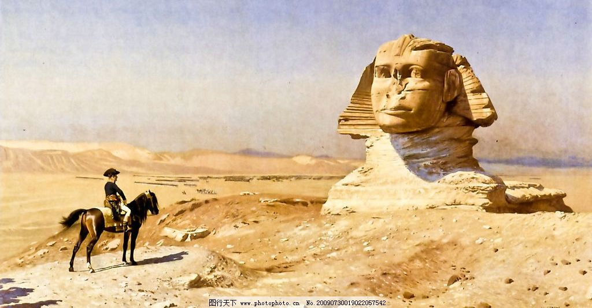
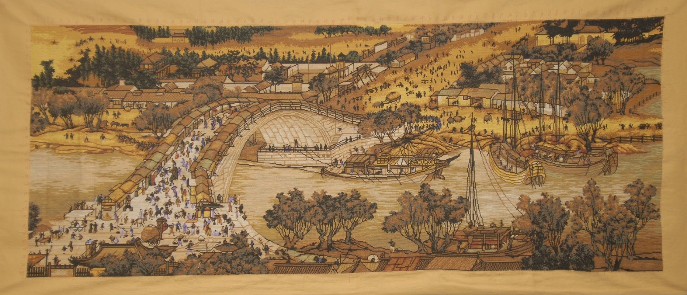
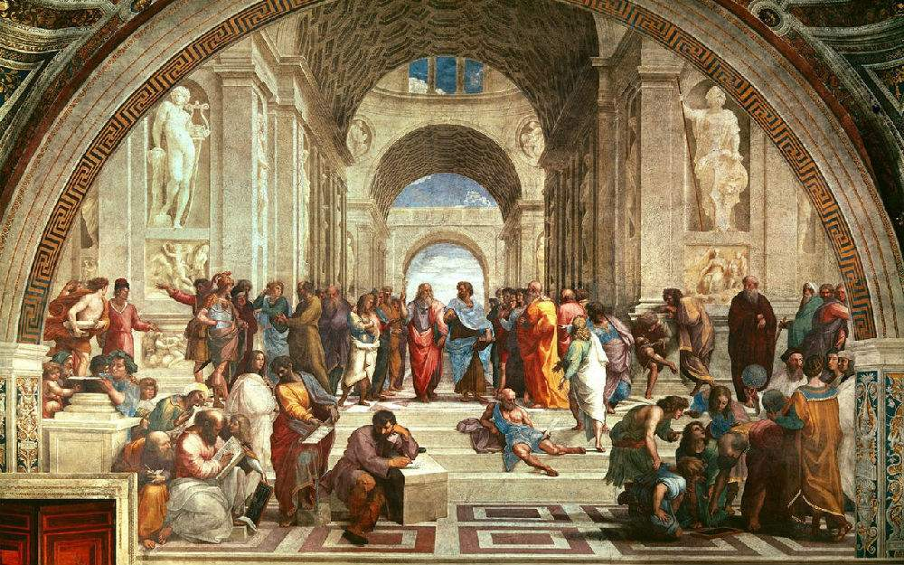
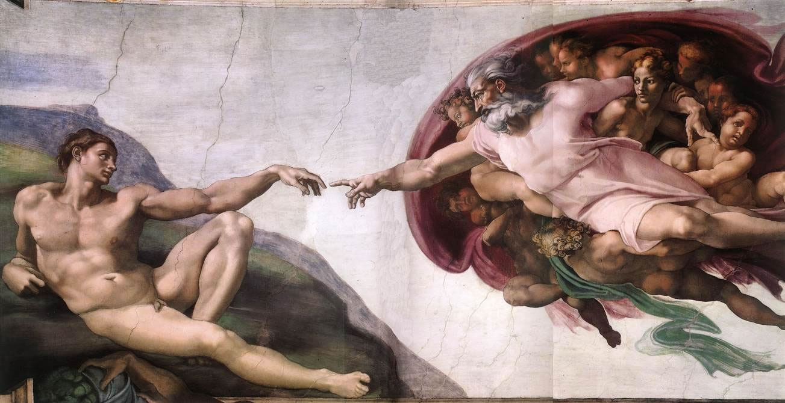
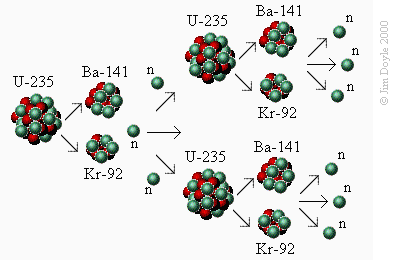

文明之光
Table of Contents
- 1. 文明之光 - 引子 一年与半小时 - 年轻的人类
- 2. 文明之光 - 1章 金字塔和死者之书
- 3. 文明之光 - 2章 轮子，拼音文字和铁器 - 美索不达米亚的文明
- 4. 文明之光 - 3章 垄耕种植法和科举 - 中国的农业文明
- 5. 文明之光 - 4章 科学之路 - 从毕达哥拉斯到托勒密
- 6. 文明之光 - 5章 罗马人三次征服世界 - 罗马法
- 7. 文明之光 - 6章 人类的奇迹 - 瓷器
- 8. 文明之光 - 7章 一个家族的奇迹 - 文艺复兴
- 9. 文明之光 - 8章 香料的诱惑 - 大航海和地理大发现
- 10. 文明之光 - 9章 艾萨克牛顿 - 理性时代的开拓者
- 11. 文明之光 - 10章 荷英时代 - 为什么英荷统治世界
- 12. 文明之光 - 11章 谈出来的国家 - 美国的建国过程
- 13. 文明之光 - 12章 科学时代 - 从笛卡尔到卡尔文
- 14. 文明之光 - 13章 缩短的距离 - 交通和通信的进步
- 15. 文明之光 - 14章 闪烁的能量 - 电的发现和使用
- 16. 文明之光 - 15章 打开潘多拉的盒子 - 原子能的使用
- 17. 文明之光 - 16章 两个人的竞争 - 苏美航天发展历程
- 18. 文明之光 - 17章 从巴赫到柴可夫斯基 - 近代音乐发展历程
- 19. 文明之光 - 18章 从达维特到麦克斯 - 绘画的发展和人性的解放
- 20. 文明之光 - 19章 计算的时代 - 从算盘到人体的一部分
- 21. 文明之光 - 20章 伟大的博弈 - 华尔街的今昔
- 22. 文明之光 - 21章 亘古而长期 - 硅谷的奇迹
- 23. 文明之光 - 22章 互联网时代
- 24. 文明之光 - 23章 上帝的粒子 - 希格斯玻色子和希格斯场
- 25. 文明之光 - 24章 增长的极限 - 珍爱我们的地球
- 26. 文明之光 - 25章 知识使人自由 - 印刷术的发明和影响
- 27. 文明之光 - 26章 新时代的曙光 - 启蒙运动
- 28. 文明之光 - 27章 近代改良的样板 - 从明治维新到现代日本
- 29. 文明之光 - 28章 还社会以公平 - 美国反托拉斯和进步运动
- 30. 文明之光 - 29章 从1到N的创新 - 抗生素的发明
- 31. 文明之光 - 30章 铸剑为犁 - 从国际联盟到联合国
- 32. 文明之光 - 31章 让我们娱乐生活 - 好莱坞的繁荣
- 33. 文明之光 - 32章 我们从哪里来，我们是谁 - 基因的发现和作用
https://book.douban.com/subject/26839342/
1. 文明之光 - 引子 一年与半小时 - 年轻的人类
我在思考，我们经常提到文明，那么什么是文明？文明的定义是什么？生物世界通常只有一种传播信息的方式，就是通过基因。而人类创造了一个平行于基因的信息体系，就是通过语言和文字，代代相传，称之为文明。所以我们将文明简单定义为：平行于生物基因，可以代代相传的一个信息系统。在《文明之光》这套书中，很多章节都提到了新能源的发现，人类每次新能源的革命，比如蒸汽机，电力和核能的发明，都为人类文明带来巨大革命。
地球的历史
| 日期 | 距离今天的时间（年） | 大事 |
|---|---|---|
| 1.1 | 45.3亿 | 月亮形成/地球形成 |
| 1.11 | 44亿 | 液态水形成 |
| 1月底 | 38~42亿 | 海洋形成 |
| 2月初 | 40亿 | 超分子出现(可以自我复制) |
| 2月底 | 38亿 | 古菌出现 |
| 3月中 | 36亿 | 光合作用的细菌出现 |
| 7月初 | 18亿 | 复杂的单细胞生物出现 |
| 9月中 | 10亿 | 多细胞生物出现 |
| 11月中 | 6亿 | 海藻和海绵出现 |
| 11月下旬 | 5.4亿 | 寒武纪生物大爆发 |
| 12月初 | 4.2亿 | 脊椎动物出现 |
| 12月中 | 2.5亿 | 二叠纪-三叠纪生物大灭绝 |
| 12月中 | 2.3亿 | 恐龙出现 |
| 12.15 | 2亿 | 被子植物出现，恐龙主宰地球 |
| 12.26 | 6500万 | 恐龙灭绝，哺乳动物兴起 |
| 12.30 | 1500万 | 古猿出现 |
| 12.31-17:00 | 350万 | 人类出现 |
| 12.31-23:30 | 25万 | 现代人出现 |
| 12.31-23:52 | 7万 | 现代人走出非洲 |
| 12.31-23:56 | 3万 | 人类称为地球主宰 |
| 12.31-23:59 | 1万 | 文明开始 |
2. 文明之光 - 1章 金字塔和死者之书
拿破仑波拿巴在狮身人面像前

经历大约4600年，大金字塔屹立不倒，不能不说是人类文明史上的奇迹。难怪埃及有句谚语说“世界上任何事情都怕时间，而时间害怕金字塔”
古埃及人做木乃伊的兴致大大超出惊人的想象。如果让大家猜古代埃及做了多少个木乃伊，也许最大的猜测不过数万而已，因为我们今天在哪怕是最大的博物馆，比如卢浮宫，梵蒂冈博物馆或者大英博物馆，也只能见到几个木乃伊。但实际上，古埃及人历史上至少做了7000多万个木乃伊。
当然，只有那些负担得起制作木乃伊费用的人才能将肉身保存下来。几乎所有的法老，以及很多高级僧侣和贵族死后都保留了木乃伊。个别的中产阶级或许能够做到这一点，但是几乎没有贫民的木乃伊保留下来。那么，这么多木乃伊去哪儿了呢？大部分木乃伊都因各种各样的原因毁掉了，其中最多的是被当作柴火的烧了，其次是被用于宗教，当然这都是很早以前的事情了。拿破仑当时还曾经给皇后约瑟芬两个木乃伊作为房间的装饰，上行下效，这种怪癖一度在法国社会上风靡一时。
开国元勋之一的约翰亚当斯有句名言，很好地概括了在文明的不同发展时期人们关注的问题的区别：“我们必须学习政治和战争，这样我们的孩子才可能有机会学习数学和哲学，以及地理自然历史等等，然后我们的子孙才有机会学习绘画诗歌音乐建筑编制女红和瓷艺。”人类也是如此，前几代人需要考虑生存和安全问题，这也就是亚当斯所说的政治和战争的必要性；接下来要考虑社会的建设和发展，离不开科学和工程；等这些事情都做好了以后，人类就会追求艺术等更高精神层面的东西。
因此，在古埃及的绘画中通过人物的穿着与神态，我们完全可以判断他们是什么样的人，比如高高在上的神灵和法老，面部和肢体表情与侍从或者奴隶是完全不同的。想一想，在四五千年前还记得艺术家就已经懂得了这一点，而二十世纪绘画的代表人物毕加索所追求的恰好也是这一点。
3. 文明之光 - 2章 轮子，拼音文字和铁器 - 美索不达米亚的文明
在古埃及,社会靠的是伦理道德来维系;而在美索不达米亚,社会则是靠法律来维系。包括古巴比伦在内的美索不达米亚各个文明时期,法律的文献和这种合同都占到泥板书的很大比例。汉谟拉比被后世的统治者和政治家视为立法者,在美国最高立法机关国会山里还有他的雕像。
新巴比伦人统治的时间还不到一百年,但是却创造了高度的文明。与喜欢打打杀杀的亚述人不同,新巴比伦人非常重视教育和科学,他们奠定了西方数学和天文学的基础。在新巴比伦时期,希腊人已经登上了历史的舞台,他们同样喜欢科学,并且从新巴比伦人那里学到了许多东西,因此希腊人称新巴比伦人为智慧之母。不仅是科学,在艺术和建筑方面,新巴比伦对西方世界的影响也很大,这就如同长安对京都和奈良的影响,阿姆斯特丹对纽约的影响一样。比如我们今天在西方常常看到圆拱顶的建筑，就是由新巴比伦人传给希腊人，又传到罗马人手里的。
4. 文明之光 - 3章 垄耕种植法和科举 - 中国的农业文明
在一种文明中,人口的绝对数量是保证文明整体水平的一个重要因素。如果一种文明只有一百万人口,它不仅修不了万里长城或者金字塔,可能连冶金技术和瓷器制造技术也发明不出来，因为在农业时代大部分人都被束缚在土地上,只有很少比例的人在从事农业以外的工作,包括手工业和建筑业,而从事所谓科学和技术发明创造的人就更少了。因此,这类大规模使用机器之前,人口的基数是保证文明发展的最重要的因素。
都江堰的整体思想是分流,这不同于世界上早期的水利工程。那些水利工程,有没筑坝围堵，要么加固河堤,要么挖渠挖运河,很少有什么工程能兼顾治水防洪，排沙，水运，灌溉和城市供水等综合效用。它所灌溉的成都平原从此成为闻名天下的天府之国。
由于粮食产量低,或者说不善于种植粮食,欧洲人在历史上谷物的消费比较有限,尤其在欧洲西北部,当地人更多地从事畜牧业,并且在饮食习惯上以肉食为主,这个习惯延续至今。不过饲养牛羊需要的土地也非常多，因此，欧洲面积虽然是中国中原地区的三倍大,但是一直不能养活很多人口,直到哥伦布发现新大陆,从美洲带回高产的土豆后,粮食的产量大幅增长,人口才开始剧增。
其次,考试的内容实际上是考察读书人的治国之策,而非文采。人们看到很多著名的文学家和诗人纷纷落马,而误以为科举考不出真才实学。其实,科学并不是作文比赛,根本没有打算考量谁的才气大,而是看哪个考生讲述的治国指导合理。虽然考中进士的人未必人人皆有真才实学,但总的来说,通过科举选拔出来的人大多数是治国的能臣,这些完成保证了中华文明在一千多年里的可持续发展。
北宋张择端的清明上河图一角

5. 文明之光 - 4章 科学之路 - 从毕达哥拉斯到托勒密
古希腊人在两千多年前就具有了其他民族缺少的逻辑推理能力和抽象思维能力。他们善于归纳和演绎,把经验上升为系统化的理论和科学。至于为什么古希腊人表现出相对思辨的特点,众说纷纭。有人认为与其海岛文化和注重商业有关,有人认为是气候条件条件好,是的很多人有闲情思考大自然的道理,并且享受纯粹思维的乐趣,还有人认为他们实际上继承了美索不达米亚文明中的科学成就,而后者有相当系统的科学研究方法,并且距离建立各种科学体系进一步之遥。
柏拉图学院受毕达哥拉斯的影响很大,课程设置包括毕达哥拉斯学派的传统课题,比如算术几何学和天文学。柏拉图在数学上并没有什么特别的建树,但是他的学院为古希腊乃至西方培养出许多学者,其中最出名的当属亚里士多德。柏拉图时代正是中国处于从春秋到战国转变的时代,那是中国历史上各种学说百家争鸣的时代。遗憾的是,中国实现大一统后,学术反而没有春秋战国时期活跃了。
《几何原本》传到中国是在明朝灭亡前。意大利传教士利玛窦将这部巨著的拉丁文版带到中国,并与明代学者官员徐光启将一共15卷的前六卷和译成中文,定名为《几何原本》，几何的中文名称就是因此而来的。但是在接下来的200多年间,这部书在中国并未产生什么影响,直到19世纪中叶,才由曾国藩的幕僚李善兰和英国人伟烈亚力将后9卷译出,并由曾国藩的长子曾纪泽做序,曾国藩出资刊印。之后,随着洋务运动的兴趣,中国一些有识之士抱着了解西方科技的心态,开始学习几何原本,这样几何才在中国普及开来。
拉斐尔的雅典学院，图中有毕达哥拉斯，欧几里得，柏拉图，亚里士多德

近代自然科学的很多体系都是在古希腊时代奠定的，希腊人在学术研究上有别于东方文明之处，不在于一两项科学发明和发现，而在于它们将自然科学各学科分门别类，对每个学科都建立起一整套系统的体系，在此基础上，演绎或归纳出普遍规律性，即定理或定律，继而成为自然科学各个学科的基石和支柱。后人可以在前人发现的基础上继续研究，推动科学的发展。无论是古希腊奠定的几何学，天文学和物理学，还是后来笛卡尔发明的解析几何或者牛顿发明的微积分，无不遵循古希腊人建立科学学科分支的办法。反观东方文明，在科学研究上有两大缺陷，首先是缺乏完整的理论体系；其次常常会将问题和定理定律混为一谈，虽然他们的解答和证明过程可能类似。这样一来，后人就很难继承前人的工作，几乎所有的研究都得从头再来，导致几千年来在科学研究上的原地踏步。事实上，中国清代的数学家估算圆周率并不比祖冲之更准确，而19世纪阿拉伯最好的数学家也未必掌握了他们祖先1000年前的数学发现。
6. 文明之光 - 5章 罗马人三次征服世界 - 罗马法
罗马人一共三次征服了世界,第一次是靠武力,第二次是靠拉丁语,而第三次就是靠罗马的法律体系。
在公元前后,屋大维建立了罗马帝国,元老院授予他奥古斯都的称号。奥古斯都大帝在位42年,带领罗马帝国进入全盛时期,并且将地中海变成了罗马的内海。但是,仅仅一个世纪后,帝国就开始衰落。到了公元三世纪末帝国便分裂成为西罗马帝国和东罗马帝国。西罗马帝国在公元476年灭亡,罗马城沦陷。东罗马帝国一直延续至公元1453年,并且有过短暂的中兴,但是总体上逐渐沦落为一个二流国家,领土仅限于希腊和土耳其的一部分。
不过,罗马人在其全盛时期创造了辉煌灿烂的文明,而这些文明的影响力一直延续至今。罗马人发明了拉丁语,并且把它变成了世界上语法最严谨的语言。18世纪以前,拉丁语是欧洲各国人民交流的媒介语言,相当于今天英语的地位,几乎所有的学术著作都是用拉丁语写成的。比如牛顿的自然哲学的数学原理就是现有拉丁语版本,后译成英语的。18世纪以后,感谢法国的太阳王路易十四,由于他强有力的统治,法国当时的国际地位炙手可热,这使得拉丁语的分支法语成为欧洲大陆最流行的语言。很多国家的王室,比如我国的沙皇,讲的都是法语,而不是俄语。
从罗马建国,到具有标志性的《查士丁尼法典》的完成,前后经历千年。这期间颁布的各项法律都被称为罗马法,于是,罗马法不是专指一步法典,而是一系列的法律和法律文件。
三家分晋指中国春秋末年,晋国被韩赵魏三家瓜分的事件。三家联合灭掉了同为晋国四卿的智氏。史学界以此作为东周时期春秋与战国的分界点。
罗马法律不断复杂，需要专门的辩护人也就是律师。在罗马帝国之后的欧洲封建时代,封建领主（贵族和骑士）自己兼任了行政管理和执法者,罗马辩论式的诉讼被封建领主的责问所代替,于是这个行业也就消失了。直到之后资本主义兴起,律师行业才重新获得恢复和发展。
回到罗马人建立法律体系的原则和方法。他们没有像秦孝公那样,把法律作为开疆拓土的手段,而是从自然法的原则出发,坚持法律必须永远与公正正义相符。这样才能中立地判断什么是对的,什么是错的,什么可以做,什么不可以做。在现实中,某件事情或行为是否符合公正和正义,不在于它是否符合统治者的意志（即实定法）,更重要的是它是否符合于自然。与自然相符便是自然的,一会儿也是正义的。这是罗马法明显区别于其他文明的法律最重要的特征。
由于自然法并不体现立法者的意志,人们可能会问:它是如何产生的?对这个问题,法学界有不同的看法。有人认为自然法产生于自然,有人认为它出自于人之本性,还有人认为其源自于人类对上帝的敬畏。但是有一点大家的看法是相同的,即认同自然法在来源上的先验性,也就是说,自然法属于无需经验或先于经验获得的知识,就如同几何学上的公理，是不证自明的。
7. 文明之光 - 6章 人类的奇迹 - 瓷器
从陶器到瓷器的飞跃，最初的动机是为了改进盛器的缺陷，尤其是陶器的密水性问题。现在我们知道，瓷器的密水性来自于两个方面，即材料本身的差别和外部的釉质。但是古代的人们却不知道这些。历史上很多技术的发明可以说是，踏破铁鞋无觅处，得来全不费工夫，完全是意外发现。往返于沙漠的商人无意中发现，沙子和盐或者苏打，一起加热到一千度时，就会变成半透明的糊状物，当它冷却下来，就会在物体的表面形成一层光滑的釉。釉有玻璃的属性，既美观又防水，因此，新巴比伦的工匠们就想到了，在陶器泥皿的表面涂上一层细砂，苏打和石灰，然后再进行烧制，这样，陶器的表面就带上了一层釉。
烧制白陶的高岭土，又称瓷土，因景德镇高岭山的瓷土质量最优而得名。高岭土的名称虽然带一个土字，但其实并不是土，而是一种矿石，由花岗岩风化形成，主要成分是二氧化硅（石英，水晶）和三氧化二铝（刚玉）。高岭土矿石被采集下来后，粉碎成非常细致的粉末。在中国古代高岭土的加工非常麻烦，首先要用类似舂米的舂子在石缸中把它们给舂碎，然后经水洗过滤，得到比面粉还细的粉末。高岭土其实并不是什么稀罕物，在世界上的分布非常广，今天随处都可以买到，而且很便宜，但是在古代乃至近代，高岭土可是宝贝。
根据费正清和大多数海外学者的观点，宋朝是中国经济发展的高峰，加上宋朝历代皇帝重文轻武，客观上造就了文化的繁荣和技术的发展。宋朝开始了文人画，文人们的审美修养和境界都非常高，在这样一个大环境下，宋朝人烧制出了极有品位的高质量瓷器。这些瓷器，在世界史上的地位，堪比从路易十四到二战前夕法国的奢侈品。瓷器的制作在北宋达到了第一个高峰，最具有代表性的是被称为汝官哥钧定的宋代五大名窑，而其中又以汝瓷最为名贵。
汝窑瓷器之所以名贵。和它内在的美感分不开。汝窑瓷器呈天青色，这是一种深邃而透亮的淡蓝色，。这种颜色一方面来自于它特殊的釉，相传釉中掺有玛瑙粉，另一方面来自于它特殊的瓷胎，因为其中含有少量的铜。光线经过青色釉面射到瓷胎的表面，部分颜色的光被吸收，而反射回来的青色光变得非常深邃而柔和。这种天青色被形容成“雨过天青云破处”，非常难得，被认为是青瓷的最高境界。
但是青花瓷是个例外，它在全世界普遍受到欢迎，无论国别，无论民族，无论收入高低。这里的原因有很多，但至少青花瓷有两点是其他瓷器所不具备的：第一青花瓷清爽简洁的色彩和丰富的图案适合雅俗共赏；第二，青花瓷不是纯粹的中国产品，而是汇聚了多种文化的结晶，从古埃及到波斯，全世界众多国家和民族都为青花瓷的发展，作出了贡献，用今天的话来讲，它从一开始就是国际化的产品。
欧洲的宫廷，不仅使用和收藏瓷器，而且还或多或少地模仿东方的生活方式，其中最典型的就是饮茶。很多国王们都会在自己的皇宫里建造茶室，里面的绘画和雕塑的主题都与瓷器上描绘的中国人的生活一致，贵族们就在这样的环境中享用中国的茶叶。在十七十八世纪的欧洲，这种文化现象持续了很长时间，中国瓷器已经不仅仅是一种精致的商品，而且还是一种文化的传播媒介，成为一种文明的象征。
从19世纪开始。世界各地都发现并开采高岭土矿，很多国家都有能力制造陶瓷了，而机械化生产，更是令制造成本大为降低，瓷器变得不再稀有，今天，瓷器不再仅仅是餐具和盛器，而是被广泛地用到了生活的各个方面，包括建筑材料，洁具，绝缘材料，绝热材料和装饰品，瓷器虽然有上千年的历史，不过好些特殊的瓷器在今天依然是属于高科技产品，科学家还在研究它们的特性，并且希望用这些瓷器制造出新的材料。
日本是个岛国，原材料相对贫乏，因此，制作任何东西都必须精益求精，否则会被认为是浪费财物，日本的手工者，喜欢把自己的名字写到产品上，师傅生怕徒弟的记忆超不过自己，那将是家族的耻辱，因此，总是倾囊相授。（不像中国师傅传徒弟，都跟着猫教老虎似的，一辈留一手，直到今天，很多手艺都失传了。）而徒弟也生怕师祖们创下的字号都砸在自己手里，因此做事情也尽心尽力。他们制作瓷器，即使在人看不见的地方，也要做到尽善尽美。
欧洲人在瓷器制造上超越亚洲人，则是整体科技进步和工业化的成果。欧洲人较早地掌握了现代的科学研究方法，擅长定量分析和比较试验，因此完全弄清楚了瓷器的成分和烧制的原理。在研制过程中，他们保留了全部的原始数据和实验报告，这样，每取得一点进步，后人都可以直接收益。这种科学研究的方法是欧洲人取得长足进步的基础。相比之下，中国工匠更多的是具有对制瓷工艺的感性认识，他们靠“师傅带徒弟”的方法将经验代代相传，而徒弟能够超越师傅，则完全靠悟性。中间即使有一些发明和改进，却因为没有详细的过程记载，或者是出于保密故意不记载，很多发明和改进都无法传世，比如宋代五大名窑的制作工艺大多失传了。这样，后世常常不得不重复前人的失败，使得瓷器制造技术进步缓慢。这其实不是中国瓷器制造特有的问题，而是中国古代很多手工业普遍存在的现象。
瓷器出窑时，由于内外温度不同，因为热胀冷缩的原因，导致瓷器外表又会产生细致的裂纹，称为开片。
8. 文明之光 - 7章 一个家族的奇迹 - 文艺复兴
一天，年轻的科西莫来到一个堆满尸体的教堂。跨过这些尸身，来到一个人迹罕至的黑暗角落，在那里他发现了古希腊罗马时代的一些经卷和手稿，这些手稿的年代非常久远，比他生活的年代早十个世纪左右，手稿中有很多机械和工程方面的图纸，以及各种文字描述。这些都是他和他的父辈从未见过的。要知道在中世纪欧洲只有一本流行的书籍-《圣经》。
几十年后，米开朗基罗为梵蒂冈的圣彼得教堂设计了类似的天顶。圣母百花大教堂的落成，首先标志着文艺复兴的开始，虽然文化和艺术的复兴还需要很长时间；其次，他向欧洲证明，美第奇家族是佛罗伦萨的主人。
《创造亚当》是创世纪中最富想象力，最出色的作品。他在这幅画中表现了上帝塑造亚当以后又赋予他生命的场面。人类的始祖亚当，被米开朗基罗描绘为体格健美的青年，其身体比例和线条，让人联想到古希腊的雕像，上帝和亚当的手指被誉为“绘画中最完美的手”，“神与人触电时的交流”，这个局部无数次地在各种作品中被复制。

如果说文艺复兴在科西莫时代，还只是复兴古希腊和古罗马的科学与艺术，那么到了洛伦佐时代，则是完全的创新了。这种创新不仅前无古人，而且影响深远。从很多方面来看，洛伦佐都称得上是文艺复兴的教父。洛伦佐不仅把佛罗伦萨建设成欧洲文化艺术的中心，而且还将它变成了整个文明的象征。洛伦佐不吝将自己的藏书请人抄写多份，传播到欧洲各地。在洛伦佐时代，大批年轻人来到佛罗伦萨学习希腊文，这样他们就可以看懂古代的书籍和手稿。和洛伦佐时代，欧洲还有一些其他有影响力的大家族，但是这些家族除了曾经富有过，对今天的世界并未留下太多的影响，而美第奇家族在完全不同，他们开创了一个时代。
9. 文明之光 - 8章 香料的诱惑 - 大航海和地理大发现
今天在中国甚至西方的历史教科书里，中世纪所占的比重都非常低。虽然他是一个非常长的时期，从西罗马帝国灭亡，一直到文艺复兴前后，大约有1000年的时间。在那1000年里，世界的中心无疑在东方，历史书上，关于这段时期的重点内容，常常是有关拜占庭帝国，阿拉伯帝国，印度，中国以及蒙古的。在谈到欧洲时，似乎只要用中世纪这三个字就可以完全概括了，至于中世纪发生了什么，似乎并不重要。有人问著名投资大师巴菲特：“世界上最长的衰退期是多长？”他回答道“1000年，在中世纪。”看来，中世纪的名声实在不算好，这或许是人们不愿提及中世纪的原因。
欧洲人在中世纪对香料的依赖，还不仅仅是为了调味，也是为了体验东方的生活情调，尤其是在十字军东征之后。十字军东征，从军事上的角度讲，是彻头彻尾的失败，并且对人类的文明来说也是一场浩劫。但是这些东征的骑士，如果有幸活着归来，则会把他们对东方文明的见识，对东方富庶复而优雅的生活方式的体验，带回欧洲。在东方，无论是阿拉伯人，还是居住在君士坦丁堡的欧洲人，他们都住着宽敞的房子。食物用品应有尽有。他们穿着从中国运来的丝绸制作的衣服，享用着各种美食。可以这么说，失败的十字军骑士将东方文明带回欧洲，而且到了文艺复兴时期，人们不再是像中世纪那样仅仅考虑死后的归宿，而是开始享受现实的生活。
阿拉伯人，威尼斯人和土耳其人，在香料贸易上所获得的巨大利润，不可避免地让欧洲的其他商人们眼红。早在中世纪时，西方各国要求摆脱阿拉伯人对香料的控制的愿望就非常强烈。很多史学家认为，十字军东征，绝不像罗马教会描绘的那样，只是想从异教徒手里夺回上帝灵柩，远征同时也是为了打破阿拉伯人对红海通道的封锁，但是这一尝试没有成功。奥斯曼土耳其帝国崛起之后，欧洲人和东方进行贸易的困境，不仅没有改善，反而更加受制于人，于是西欧国家就很自然的想要去探寻另外一条通往印度的航线。这便促使后来欧洲的航海家们到处寻找，不用像阿拉伯人交税，就能通往印度的航线：哥伦布和麦哲伦向西航行，迪亚士和达伽马向南航行，约翰卡波特向北航行。君主们和投资商就如同现在的风险投资家一样，他们支持这些航海家的探险，目的是为了追求香料和其他东方商品交易的巨额利益。
查理一世耶批准了麦哲伦的计划，并且给了他和他的合伙人非常“慷慨的”特权，其中包括：
- 垄断所发现的航线10年的使用权
- 任命麦哲伦为他所发现的土地的总督，并可以从未来的收益中提成5%
- 此次航海贸易的五分之一的利润
- 所发现海岛（除了前六个最大的）今后受益的十五分之一
我之所以把这些条款都列出来，是因为这类条款鼓励了欧洲人去冒险。相对来讲，当时东方帝国的皇帝们给于功臣的常常不是一起分享的利益，而是杀戮。要了解近代西方人为什么能够在落后几百年的情况下崛起，并且超越了亚洲国家，这些契约是解开秘密的一把钥匙。
哥伦布，达伽马和麦哲伦无疑是人类历史上最伟大的航海家，他们和当时无数的冒险家一道，开启了大航海的时代。它们各自的航行在历史上的作用各不相同：哥伦布发现了新大陆，达伽马找到了从东绕过非洲到达亚洲的航线，麦哲伦（和埃尔卡诺）第一次完成了人类的环球航行，并且开启了往西经过美洲到达亚洲的航线。他们三个人在出发前都犯了同样的错误，低估了他们即将进行的探险的难度：哥伦布把一万多海里的航行估计成两千多海里，达伽马也少算了百分之六十的航程，而麦哲伦则信息完全错误，误把河口当做了海峡，以至于航程比预想的至少多了一年的时间。或许正因为如此，他们才壮起了胆子去做当时人们想都不敢想的事情，从这方面来讲，他们都是幸运的。在这三人当中，关于哥伦布的论著最多，不过总的来讲学术论著多于文学传记。关于麦哲伦的论著则相反，或许因为他在航海的途中悲壮的死去，让他的探险经历更富有震撼力，因此关于他的传记很多，以作家茨威格写的《麦哲伦传》最为有名。茨威格笔下的麦哲伦，是一位富有梦想，性格坚强而勤于实干的英雄，他在困难面前表现出的镇定和坚毅，是完成这次人类壮举的根本原因，这本书激励了很多富有理想，勇于开拓的年轻人。
10. 文明之光 - 9章 艾萨克牛顿 - 理性时代的开拓者
“先生们，如果让我必须在那种由老师管着，修足学分就能毕业的大学与那种没有教授和考试让年轻人一起共同生活，互相学习三四年的大学中选择一种，我讲毫不犹豫地选择后者。为什么呢？我是这样想的：当许多聪明，求知欲强，富有同情心且目光敏锐的年轻人聚到一起，即使没有人教，他们也能互相学习。他们互相交流，了解到新的思想和看法，看到新鲜事物并且掌握独到的行为判断力。”
我一直对大学的教育方法很感兴趣。并且每年花不少时间参与约翰霍普金斯大学的管理。每次董事们和系主任们讨论和研究的一个课题就是如何创教育出有创造力的学生。一个大家都认可的原则，就是要帮助学生找到自己感兴趣的课题。牛顿在剑桥的经历是一个很好的研究案例，公平地讲，在教授知识方面，今天的很多大学做的都比当年的剑桥要好，毕业生的平均质量也比当时好很多。对于大部分学生，现在的教育方法无疑是更加成功的，但是，在给学生自由发挥的空间上，今天的大学不牛顿时代的剑桥，因此，在保证了平均水平的同时，也可能会牺牲了牛顿这样的天才。另一方面，牛顿的成功与他接受的知识的方法很有关系。
在剑桥学习期间，牛顿针对所读的书做了详细的笔记，并且做了大量的实验来验证书中结论的正确性。这些实验的细节也记录在他的笔记中，后来有人将它整理成牛顿的早期文献《三一学院笔记》。我想大家一定都会同意这样，如果剑桥一定要求牛顿按照笛卡尔书上的讲法回答考试问题，那么他就很难超越笛卡尔了。写到这里，我常常为我们当下的文科教育感到悲哀，因为在灵活性很强的文科考试中，总是要求学生遵从教科书里面的一家之言。
牛顿在化学上的贡献，有点像达芬奇在物理学上的贡献，他们都通过大量的实验注意到很多自然现象并且总结出一些规律，但是由于认识的不足，无法给出科学的解释，或往往给出的一些错误的结论。由于认识的局限性，牛顿没有成为一位合格的化学家，他寻求的目标（炼金）在化学上是做不到的，但是他的研究方法却是可取的。 在科学研究上，正确的方法比正确的结论更加重要，因为如果方法正确，即使一时得不到正确的结论，但是只要按照正确的方法走下去，最终可以得到正确的结论。但是如果方法不正确，偶然得到一些正确的结论，对科学的发展却没有什么积累。
牛顿一直非常谨慎地看待自己在科学上所取得的成就。他在去世前不久说过，我不知道我可以向世界奉献些什么，但是对于我自己来说，我似乎只是像一个在海岸上玩耍的孩子，以时常找到一个比通常更光滑的卵形石子或者更美丽的贝壳来自娱，而广大的真理海洋在我面前还真的没有发现。
11. 文明之光 - 10章 荷英时代 - 为什么英荷统治世界
现在，我们概括一下，葡西两国的发家史。一个主要靠欧亚大陆之间香料和瓷器贸易中巨额的利润，一个主要靠开采金山银矿，无论是哪一种，都不需要花费太大的气力。如果葡西两国能够善用这些财富，发展工业，投资教育和科技，今天世界的历史可能会改写。但是，财富来得太快，太容易，有时反而不是一件好事情。美国有人进行过统计，发现那些天文数字彩券大奖的中奖者，成百上千万的钱大多在十年内就挥霍一空。而在历史上，葡萄牙和西班牙就是中了这样头彩的国家，用今天的俗话说，如同暴发户或土财主。
除了购买奢侈品，葡西两国还修建了很多宫殿和教堂。如今在伊比利亚半岛上，比较像样的建筑和花园，大多数是在那个年代修建的。西班牙美轮美奂的王宫，也是用大航海带来的那些银子堆砌起来的。
久而久之，西班牙和葡萄牙便习惯了高价从国外购买商品，国内的工商业反而极度萎缩。今天除了一些手工业，西班牙和葡萄牙在世界市场上都没有数得上的工业（近来西班牙的服装业或许是个亮点）。有了钱之后，西班牙人渐渐连田都不种了，本来气候非常适合发展农业的西班牙，反而成了粮食进口国。每每看到中国对土地GDP的依赖，我就希望决策者能看看西葡两国的教训。
到西班牙旅游，就应该去离马德里不远的托雷多(Toledo)看一看，这是当年西班牙文豪塞万提斯笔下的人物堂吉诃德的故乡，也是世界上少有的保存完好的古城.在那里，人们仿佛置身于16世纪。堂吉柯德的命运，反映出伊比利亚半岛上两个王国的兴衰。这位思想还停留在中世纪的骑士一生处处碰壁，至死都没明白一个道理：他的盾牌保护的是一个旧世界，他的矛头指向的是一个新世界。清朝末年的中兴名臣曾国藩的幕僚赵烈文，就曾经预见到清朝的灭亡。他深知他的主人曾国藩鞠躬尽瘁维护的是一个日薄西山的王朝，虽然后者嘴上不愿意承认，但是心里却同样明白旧制度难以为继。西班牙和葡萄牙也是如此，历史曾经给了他们机会，但是落后的制度却让他们无法把握住这个机会。
从西北部的低洼地区，在日耳曼语族中成为尼德兰(Netherlands)，这是今天被称为荷兰的正确国名。其中最强大的一个省称为Holland，音译成中文就是荷兰。今天我们用荷兰一词代表整个尼德兰整个国家，就如同用英格兰代表整个联合王国，或者用普鲁士代表德国一样，有点以偏概全。不过既然这个说法，已经为大众所接受，大家就只好将错就错了。
在休渔期，荷兰人就要考虑做点什么，大部分渔民想到的就是利用他们的渔船，给欧洲其他地区运输货物。后来荷兰人就有了“海上马车夫”的名声。除了海运，荷兰人还从英国进口棉花，纺织成布匹卖到欧洲各地，而加工业是资本主义发展早期最有效的积累财富的办法。
成千上万的荷兰人敢于把自己的积蓄投入这项冒险，原因有这么几条。首先荷兰人喜欢冒险，这也使得他们的后裔建立起了华尔街。其次东印度公司有荷兰政府的背书。再次，但也是最重要的是，荷兰商人信誉良好，并且是世界上最早恪守信托责任的群体。信托责任并不是人们常说的守信用和不欺诈那么简单，它至少包括三方面的责任，首先是法律责任，这个很容易理解，当集资人把钱交给某个人做生意时，这个人有法律上的义务，不能将这些钱窃为己有。第二是道德责任，比如合伙人将公司交给职业经理人管理，经理人有责任将公司管理好，并且为公司股东谋求利益。一个管理者，如果不尽心尽力为股东谋求利益（可以是短期，也可以是长远的），也许并不违反法律，但是不符合道德责任。第三是专业责任，受托人必须具有专业知识和技能，这一点其实常被人们忽略，没有第三点，好心未必能做成好事。信贷责任不仅是现代管理的基础，也是现代商业的支柱。
荷兰船员在生命和信托责任之间，选择了恪守信托责任，也创立了传之后世的的商业法则。这种行为在那些信奉“人不为己，天诛地灭”的国度是难以置信的，但这又实实在在地发生在几百年前的荷兰。这种恪守信托责任的行为，日后给荷兰商人们带来了长远的利益，它帮助荷兰商人占领了海上贸易的世界市场。巴伦支也在这次探险中丧生，为了纪念他和他的同伴对探索北极航线做出的贡献，后世用他的名字命名了北冰洋的一片海域。
为了保证国民和外国人在银行的存款安全，阿姆斯特丹立法规定，任何人不得以任何借口干涉银行的商业自由。也就是说即使国王或是政府，也不能干预银行的业务。于是就出现了一件令人不可思议的事情：当时的荷兰和西班牙正在打仗，阿姆斯特丹的银行居然没有冻结西班牙的白银，甚至像西班牙向它贷款购买军需物资时，它还给西班牙贷款，这可以说是履行信托责任的又一个典范。
从上面的对比，可以看出荷兰和葡西两国之间巨大的反差。概括来说，这首先是制度的差异，葡西两国坚持的是靠王权建立起来的日趋衰落的旧制度，它无法抗衡荷兰新兴的资本主义新制度。其次，在利益分配上，在葡西两国，大航海的收益就只限于王室贵族富商和冒险家，对国家的强大和百姓的富足没有直接的帮助。而在荷兰，全球贸易则是一个全民参与的行动。通过全球贸易，这个低地国家做到了民富国强。第三，荷兰人开创了现代商业体系，他们不仅发明了现在的银行，证券交易所，信用和有限责任公司，而且开创了信托责任制度。在荷兰诞生了一个信守信托责任的专业管理阶层，这些专业人士使得工商业摆脱了古代和中世纪缺乏规范性的状态，变得井井有条。
重商主义这四个字，很多人都听说过，但是大部分人都是从字面去理解，认为就是重视商业，尤其是考虑到英国和荷兰崛起时，正是全球贸易欣欣向荣的时代。但是，重商主义的真正含义是重视生产，尤其是重视工业生产。重商主义，概括起来有这样几个要点。1. 尽可能地拥有硬通货，因为只有这样国家才能搞基础建设，军备和从事对外扩张。2. 为了做到第一条，国际贸易必须优先于国内贸易，必须保证贸易顺差。3. 既然各国都在生产，那么保证顺差的前提是要从事高附加值的劳动，在当时就是从事原料加工而不是出口原材料。4. 鼓励生育，因为社会需要大量的劳动力。5. 国家领导，并且监督产品质量，以保证全球竞争力。
世界博览会向全世界宣告了英国黄金时代的到来。伊丽莎白一世到维多利亚，英国这个只有地球陆地面积的2%，人口在当时只有世界1%的小国，经过200多年的努力，成为有史以来全球第一个超级大国。英语也取代了法语，成为世界各国交流的中间语言。在这200多年里，英国人首先解决了政体的问题，接下来解决了全球商业的秩序问题，而工业革命总是在这两个任务完成之后的事情。如果从工业革命算起，英国人只用了半个世纪，就成为了世界超级大国。一个世纪后，英国将世界的主导权让给了他的同族兄弟美国，后者不仅继承了前者的各种传统，还继承了荷兰人喜欢在资本市场冒险的特点。相比荷兰和英国，美国在社会公平性方面更前进了一步，这保证了它的经济有更长远的发展。
12. 文明之光 - 11章 谈出来的国家 - 美国的建国过程
钦命福建巡抚部大中丞徐继畲所著《瀛寰志略》曰： 华盛顿，异人也，起事勇于胜广，割据雄于曹刘。既已提三尺剑，开疆万里，乃不僭位号，不传子孙，而创为推举之法，几于天下为公，浸浸乎三代之遗志。其治国崇让善俗，不尚武功，亦迥与诸国异。余尝见其画像，气貌雄毅绝伦。呜呼，可不为人杰矣哉！米利坚，合众国以为国，幅员万里，不设王侯之号，不循世及之规，公器付之公论，创古今未有之局，一何奇也！泰西古今人物，能不以华盛顿为称首哉！
从广义上讲，国父们包括签署独立宣言的所有代表。而在狭义上，通常指比较有名的本杰明富兰克林(Benjamin Franklin, 1706-1790, 美国宪法的主要起草者)，托马斯杰斐逊(Thomas Jefferson，1743-1826, 独立宣言的起草者，美国第三任总统), 约翰亚当斯(John Adams，1735-1826, 美国第二任总统)，詹姆斯麦迪逊(James Madison，1751-1836, 美国宪法之父，美国第四任总统)，和亚历山大汉密尔顿(Alexander Hamilton, 1757-1804, 美国第一任财政部长，美国金融体系的创立人)等人。
在政治理念上，约翰洛克对杰斐逊后来民主思想的形成和对现代政府的构想，有非常大的影响。洛克是英国的经验主义哲学家，在社会契约理论上做过重要贡献。洛克认为政府和人民之间是一种契约关系，人民承诺纳税来维持政府，而政府承诺保护人民的利益。他主张政府只有在取得被统治者的同意，并且保障人民拥有生命，自由和财产等权利时，其统治才有正当性和合法性，这一思想后来被杰斐逊写进了独立宣言，并在之后的200多年里成为美国对外政策的准则。美国颠覆他国独裁政府的法理依据都来自于此，即一个政府一旦缺乏被统治者的认同，政府和人民之间的社会契约就不复成立，那么人民便有有权推翻政府。
后来说，杰斐逊更倾向于分权给个州政府，认为民众的权利和幸福远比建立一个强大的中央政府更重要，认为只有这样一个国家才能长期繁荣。而汉密尔顿则倾向于中央集权，他认为英国之所以强大，是因为有一个强势的中央政府，美国应该学习英国。至今无法证明谁的观点更好，但是两个人对美国200多年直到今天的影响都非常深远。美国联邦和州两级立法，司法和行政制度，在很大程度上都是杰斐逊的功劳，而美国统一的金融和货币体制，则是由汉密尔顿奠定的基础。今天美国政府所拥有的金融权力，比如发行货币，设立中央银行，都是根据汉密尔顿对宪法的解释而引申出来的。
在杰克逊看来，汉密尔顿迷恋权力，有悖于他“将权力交给人民”和“政府是完全为民众服务的工具”这些理想，他和另一位国父（也是他后来的一生挚友）詹姆斯麦迪逊创立了共和民主党，也就是今天民主党的前身。与此同时，哈密尔顿创立了联邦党，他力推和自己政见相同的约翰亚当斯作为党的领袖，他则身居幕后。从才干来讲，汉密尔顿应该是仅次于杰斐逊的政治领袖，而且年富力强，精力无限，但是由于他不是在美国出生的，因此注定了这辈子当不了总统。甚至很多历史学家认为，美国宪法里之所以规定只有美国出生的公民才能担任总统，就是针对汉密尔顿。因为他的政敌太害怕他了。
然而华盛顿在整个独立战争中的作用依然非常大。在长达八年多的独立战争中，华盛顿以坚强的毅力担负起反抗英国人争取独立的重任。他原本是独立运动中的温和派，但是他一旦被授予领导独立战争的重任，就坚决主张把独立战争进行到底，反对妥协媾和。当时北美面对的是世界第一强国英国，无论从军力还是补给上，北美的大陆军和民兵都处于劣势，在大部分时间里，殖民地一方在军事上失败多于胜利。如果这是华盛顿放弃或退却了，北美独立的时间可能就会延后很多。在这种情况下，很有韧性的华盛顿成了当时北美独立运动的灵魂。在整个战争中，他表现了卓越的组织才能，他不仅要把来自各州军纪散漫的大陆军和民兵聚集起来，训练成军纪严明的现代军队，还要筹集物资和军备，在战事不顺利的情况下，他还需要不断的鼓舞军队和民众的士气，可以用屡败屡战来形容。另外，在独立战争中，华盛顿努力维系着各个殖民地结成联盟，反对为了各自的利益各行其事。正是靠这种顽强的信念和韧性，最终他做出了一件看似不可能的事情。
有些议题和提案在大会上没有太多的争议就通过了，比如关于美国的国体，大家都同意建立一个三权分立的民主国家，同时要保证各个州的独立性。因此，美国的各个州不同于中国的省，前者的权力要比后者大得多，美国的州有独立的立法和司法权，因此各个州的民法乃至刑法都不相同，联邦官员和州县官员之间不存在上下级关系，总统任命不了州长，也受不了他们的职。这种横向三权分立，纵向州县自治的国策，就是当时定下来的。
南北双方争执不休，最后只好妥协，其结果是达成了一个令人啼笑皆非的方案，把黑奴算作3/5个人，这就是臭名昭著的“五分之三条款”。这当然是美国宪法的污点，但是这个过程却说明美国早期的政治家们具备合作与妥协的态度，这才是立宪都已顺利进行下去。
而具体到这十条修正案的内容也是十分有趣。我们不妨看一看当时我今天美国民众关心的问题。1. 信仰自由，2. 允许个人拥有枪支，3. 军队不得进民房，4. 公民免于不合理的搜查和拘禁，5. 无罪推定，6. 刑事案件的陪审团制度 7. 民事案件的陪审团制度，8. 禁止严厉刑罚，9. 宪法未列的权利自动赋予民众，10. 宪法未赋予各州的权利自动属于民众。从这十条修正案中可以看到，美国宪法赋予民众的权利非常大，美国宪法的其他条款和这十条修正案类似，都是些只要识字就能看懂的大白话，但就是这些看似大白话的道理，树立了社会的正义，并确保美国人能安享自由带来的幸福。到此，统一的美利坚众国才算是正式的建立起来了。
美国的立国，是人类历史上第一次通过协商而非武力解决纠纷，从而达成一致，最终建立起一个多民族统一的国家。美国立宪谈判之所以能够成功，当然需要一定的社会条件。首先是法国的启蒙运动使得民主思想在美国普遍被接受，其次是各个利益集团的代表们开明温和的价值取向。这些国父虽然文化背景不同，教育程度不同，身份和利益不同，但是没有希望使用武力解决问题。美国的立宪过程从1787年5月到1788年6月，讨论和争论了一年多的时间，多次面临谈不下去的困境，但是代表们坚持一个原则，就是可以谈判，但是不能动武。在制宪会议上，代表们遇到一个又一个矛盾，他们解决问题靠的是妥协和宽容。没有一位代表对对最后的结果完全满意，用富兰克林话说：“我得承认我自己对这部宪法中的好几个部分并不认同，但是我不觉得我会阻止其通过…我们即使再开几次制宪会议也未必能够制订出一部更好的宪法…所以先生们，尽管这让我自己也感到意外，但我认为这个系统已经接近完美….”但是，这样的结果却是代表们（和他们所代表的州）都能接受。在美国的立宪过程中，我们看到了人类的进步，看到人们学会用文明的方式和理性的力量建立一个国家。
和历史上很多强大的国家不同的是，美国是一个松散的联邦，而这个联邦日后不仅没有分裂，反而成为超级大国。这当然是很多代美国人长期努力的结果，但是从另一个方面讲，也和这些开国者为了这个国家确立了良好额政治体制和树立了无私的道德规范有关。当初，这些开国元勋谁也没有把自己当回事，更没有把自己当成什么开国的伟人，但是历史证明这些没有把自己当回事的国父，反而在后世成为了当代政治家学习的典范。
13. 文明之光 - 12章 科学时代 - 从笛卡尔到卡尔文
在书中，笛卡尔系统地阐述了科学的研究方法，他指出，研究问题的方法分四个步骤。1. 不盲从，不接受任何自己不清楚的真理。对于一个命题，要根据自己的判断，确定有无可疑之处。只有那些没有任何可疑之处的命题才是真理，这就是笛卡尔著名的怀疑一切的观点，不管有什么权威的结论，只要没有经过自己的研究，都可以怀疑，例如亚里士多德曾说过，重的物体比轻的物体下落速度快，但事实并非如此。2. 对于复杂的问题，尽量分解为多个简单的小问题来研究，一个一个的分开解决，这就是我们常说的分析，或者说化繁为简，化整为零。3. 解决这些小问题时，应该按照先易后难的次序逐步解决。4. 解决每一个小问题之后再综合起来，看看是否彻底解决了原来的问题。
炼金术士的另一个贡献，就是定量分析这种实验的结果，量杯，天平，比重计和各种简单的测量工具被用于他们的实验，有了这些定量的记录和分析，后人便可以重复前人的实验结果。这一点成为了后世人们进行科学研究的一个基本方法。要想在前人的基础上改进，第一步都是要重复前人的实验结果，这是今天在西方科学杂志和高等级的学术会议上发表论文的铁律。比如，一个人发明了一种更准确的指纹识别算法，如果他只是给出自己新算法的准确率，而没有对比前人发明的算法在同等条件下取得的结果，任何权威杂志都不会录用他的论文。定量分析带来的另一个结果就是，在科学上从尊重权威变成尊重事实。
在雅各宾派的高压下，拉瓦锡展示了一个贵族和学者的骨气。他通过教育委员会向国民发出呼吁，他说现在很多科学家的研究是被关闭，生活没有保障，学术处于毁灭的边缘，法国的荣誉被玷污了，学术一旦遭到破坏，再想恢复就需要很长的时间了。
和所有科学巨匠一样，拉瓦锡善于对整个学科进行综合分析，提出新的学术思想，并且建立起学科体系。具体到化学研究，拉瓦锡善于发现化学反应中各种物质变化的相互联系，然后透过现象看到本质，因而他比同时代的化学家要看得更远。后世评价拉瓦锡为近代化学之父，甚至认为他之于化学，犹如牛顿之于物理。
细胞：
- 细胞膜，细胞质，细胞核
- 分裂繁殖
- 细胞核 - 染色体 - 基因 - 分子级别的脱氧核糖核酸
达尔文对进化的原因，用四条根本的原理进行了合理的解释：1. 过度繁殖，2. 生存竞争，3. 遗传变异，4. 适者生存。
如果再细分一下，科学可以包括五个分支：
- 形式科学(Formal Science)，包括数学，逻辑学，计算机科学等。
- 物理科学(Phyiscal Science)， 包括化学，物理学等。
- 生命科学(Life Science):，包括生物学，医学等。
- 地球和空间科学(Earth and Space Sicence)，包括天文地理等。
- 社会科学(Social Science)，包括哲学等。
其中中间三种属于实验科学，也就是狭义科学所指的范围。
科学家对于科学的和科学方法的认知是从近代才开始的，在此之后，科学有了飞速的发展，这个发展过程就是不断的继承和否定前人结论的过程。一般人对继承比较容易接受，对于否定在心理上总觉得没有底气，因此证伪才变得尤其重要。可能有人会问，是否有不变的真理，遗憾的是，人类几千年的实践证明，今天认识不到的事情，不等于明天认识不到。古人感觉不到地球的公转，不等于几千年后的人们认识不到，这才有了日心说代替地心说。因此，任何科学的结论，至少在理论上要存在一种观测的方法（即使实际上没有进行这种观测也无妨）来表明这个结论不总是真的，不能提供这种验证方法的学说就不是科学的。
14. 文明之光 - 13章 缩短的距离 - 交通和通信的进步
到了半个世纪后，中国再次上演英国和日本的铁路热，而主管人员圈钱修铁路的方法甚至都惊人的相似，都少不了瞒天过海和做假账。中国铁道部部长刘志军，以修进客运专线为名，完成了大量的高铁建设，然后虚报预算，和十河信二几乎如出一辙。从赫德森到十河信二，他们或许如亚当斯密所说，原本有很多个人目的的考虑，但是他们被一只看不见的手牵引着，加快了铁路的发展。当然这些进步需要有人来为贪污和浪费。
到了19世纪40年代末，纽约的六家报社记者组成了纽约港口新闻社，全部记者来自这六家报社。一旦采访到新闻，除了向自己报社供稿外，还通过电报向其他城市的报社出售新闻。这就是美联社的前身。
普鲁士的胜利是毛奇新的军事思想的胜利，其背后是以新的交通和通信手段为基础的。电报在军事上的应用，除了产生新的作战方法，而导致了新的战争指挥体系的出现。在以往的战争包括拿破仑战争中，虽然西方国家已经有了总参谋部，但是它的作用只限于在战前进行规划，而战争一旦开始，一切只能依靠前线指挥的将军了。而前线的将军又常常无法得知全局的信息，只能根据不全面的信息作出判断，这些人的经验和指挥的艺术常常成了决定战争胜负的最重要因素，甚至有时是唯一的因素。在耶拿战役中，拿破仑靠着达武元帅的杰出指挥，轻易获胜。而在滑铁卢战役中，拿破仑则因格鲁希的平庸而惨败。在战争史上，我们看到了战争的胜负，往往有很大的偶然性，这在信息流通不顺畅，不及时的时代难以避免。但是电报的使用，使后方的总参部可以及时得到前方各战场全部的信息，从而做出对全局最有利的决定。因此，从普鲁士开始，现代国家的战争决策从一两个将军手里转到了总参谋部，这种格局延续至今。这样一来，战争角色就由个人行为变成了“专家”的集体行为，战争中偶然性的错误大大减少。中国古代所说的“运筹帷幄之中，决胜千里之外”在信息流通迅速，交通发达的今天，已经是很平常的事了。
15. 文明之光 - 14章 闪烁的能量 - 电的发现和使用
西屋和特斯拉在交流电上所获得的成功，并没有让爱迪生和通用电气公司放弃直流电，而是开始了很长时间的直流电和交流电之争。交流电在传输和电机上的优势是显而易见的，它可以在几乎不损失什么电量的前提下传输几百公里，而直流输电的传输距离只有几公里，否则在线路上损失的电量会高过实际使用的电量。这么明显的输电效率差距，使得通用电气公司在竞争中落在下风。
其实爱迪生的通用电气和西屋电气的竞争是商业竞争，为了在商业上打败对方，提升诋毁交流电，不等于他真的相信他自己的那些鬼话。美国的专利保护期一般是17年，爱迪生要做的就是在这17年里不要输掉，而它采用的方法就是在商业上压垮对方。
上述原因说到底是一个“利”字，作为一个企业家，爱迪生必须让自己的企业活下来，然后才可能有所发展，而不是说“哦，交流电好，大家用交流电吧，我的企业生死无关紧要”。
核聚变的原理和太阳发光的原理相同，它是将原子量小的元素（在元素周期表中必须排在铁前面，比如氢）快速碰撞，变成原子量较大的元素（比如氦），在这个反应中会有质量的损失，而根据爱因斯坦的质能转换原理，损失的质量会变成巨大的能量。一个重氢原子氘和一个重氢缘子氚反应，可生成一个氦原子核和一个中子，同时释放17.6MeV的能量。
在曼哈顿计划开始时，利用核聚变制造武器的研究也在进行，但在没有原子弹之前，人类根本无法达到核聚变所需的温度，因此这项研究一直没有进展。直到原子弹试爆成功之后，人们才有可能从原子弹爆炸中获得核聚变所需要的高温，核聚变的研究才开始有了突破性进展。由于原子弹之父奥本海默和很多科学家不愿意制造大规模杀伤性武器，氢弹的研究便交给了奥本海默的助手泰勒，直到1951年才取得突破，1952年第一颗氢弹试爆成功。人们发现氢弹释放的能量是同样质量的原子弹的几十倍。
在托卡马克强磁场的约束下，高温的氘氚等离子体发生核聚变反应，释放出大量的能量，并能持续反应几秒钟。当然这么大的电流（上百万安培）需要消耗巨大的能量，而且比反应堆产生的能量还多，这显然不可行。因此，各国核聚变研究的重点，就放在如何提高输出能量和输入能量之比（也称为能量增益），也就是科学家们常说的Q值。当然不同的反应物，释放的能量不同，为了便于比较，大家在计算Q值时，以氘氚反应为准。如果进行的不是氘氚核聚变，而是其他元素的核聚变，则将获得的能量增益转换成相应氘氚反应的对应值。经过各国科学家的努力，从上世纪80年代开始，这个只从大约0.2开始不断提升。
16. 文明之光 - 15章 打开潘多拉的盒子 - 原子能的使用
同一种元素，有着相同的质子数，也称为原子数，从1到119为止。在20世纪30年代，人类已知的原子数最多的元素是92号元素铀。既然不同元素的差异，仅仅是在质子数上，如果给原子数少的原子增加一些质子，就应能得到原子数多的原子。科学家们用质子束（或其他粒子束，比如alpha粒子束）轰击原子，一些质子撞击到被轰击原子的原子核，并粘在上面，从而产生原子数更大的元素。对于某些元素，这样通过增加质子而得到其他元素的做法，确实行得通。因此科学家们就在想，如果给当时已知原子数最大的又增加一些质子，岂不就能创造出新的元素了？

使用一个中子轰击U235的原子核，会产生核裂变分解成为Ba-141, Kr-92和3个中子以及能量。新产生的3个中子会和其他的U235发生反应，不断地裂变和产生能量，形成链式反应。
虽然原子弹的原理很简单，就是前面说的链式反应，但是如何确保链式反应真的能够进行下去，就是一个大问题。虽然说一个快中子可以撞开一个铀原子核，并且释放出三个快中子，但是因为原子核的直径只有原子直径的万分之一左右，中子撞到原子核的概率，就相当于一个盲人往足球场上随便开一枪枪，命中了一个小拇指粗细的标准杆的概率。如果铀金属足够厚，一个中子可以穿透很多铀原子，要么它撞上原子核的概率就大很多。假如一个中子在速度衰减下来之前，有机会穿过1万层原子，那么撞上原子核的几率就上升为63%，这样链式反应就能进行下去了。原子弹中铀的体积必须足够大，或者说质量足够大，达到某个质量链式反应就会自行进行下去，达不到这个质量则中子撞到原子核的几率就很小，链式反应进行一会儿就会停止。这个质量，在物理学上称为临界质量。至于这个临界质量有多大，没有人知道，既不能猜，也不是多多益善，更遗憾的是，它也无法通过实验来解决。（奥本海默负责这个问题，也就是快中子计算）
即使理论计算出链式反应能进行下去，也还需要大量的实验去证实，最好的实验办法就是搭建一个可控的原子反应堆。为了实现可控，就得让反应堆里面的中子速度降下来，只有快中子撞击铀原子核时才会发生核裂变，速度慢的中子撞击原子核是不会导致核裂变的，这样就能避免不可控的核爆炸。降低中子速度的物质被称为减速剂，而最佳的减速剂是中水或纯石墨。不过知道制造大量的重水和纯石墨并不简单，纳粹德国后来就是因为没有重水做实验而影响了核计划的进度。
除了理论和实验的问题，原子能武器还有很多工程和生产的问题需要解决。首先，地球上天然的铀元素大部分都是无法进行链式反应的铀238，只有不到1%的铀是可用于制造原子弹的铀235。如果在原子弹中尽是铀238，那么中子撞到铀235的原子核之前，可能先撞再不会发生核裂变的铀238上了，这样链式反应就不会进行下去，因此原子弹需要非常纯铀235。现在在新闻里提到伊朗核问题时，经常能讲到“浓缩铀”意思就是这个原因。由于铀238和铀235是同一种元素的同位素，化学性质一样，当然无法通过化学方法分离。在工程上，它们的分离是制造核武器的一大难题。（电子离心机分离U235/U238, 和中子轰击U238产生钚239）
17. 文明之光 - 16章 两个人的竞争 - 苏美航天发展历程
谢尔盖科罗廖夫，冯布劳恩
虽然科罗廖夫蒙受冤狱，并长期遭受非常不公正的待遇，但是他对前苏联始终忠心耿耿，他没有像他的另一个同伴，杰出的科学家萨哈罗夫那样，从此称为对苏联持不同政见者。科罗廖夫的一生，多半时间里是没有人身自由的情况下工作的，现在没有任何文件和史料记载他当时的心情，我们很难想象一个人在这样遭受监视，不信任甚至受到肉体惩罚的情况下，还能安心工作，并为自己的国家，为这个人类作出卓越贡献。我常常想相比科罗廖夫，我们有时候在工作中所受一点委屈根本算不上什么。
太空探索极大地促进了科技的进步，今天我们使用的很多东西，最初都是为太空探索的需要而发明的。比如我们今天婴儿使用的尿不湿，其实最早是为宇航员开发的。我们用的反辐射保暖衣和保温包，都是太空服的一部分。今天有记忆海绵的床垫和枕头，也是采用航天技术。今天数码相机成像的CMOS传感器，最终也是为了将登月图像传回地球而发明的。欧洲计划一月成功登月6次，在月球上进行了很多实验，带回来的几百公斤月球的岩石标本，对于我们了解太阳系的形成起到了关键的作用。这些岩石标本证实了月球起源与一颗早期行星和地球碰撞的理论。
18. 文明之光 - 17章 从巴赫到柴可夫斯基 - 近代音乐发展历程
在我一生生命的最低点，是贝多芬（和尼采）使我站了起来，让我有了今天的一切。至于为什么贝多芬可以给人如此大的力量，罗曼罗兰（在约翰克里斯朵夫里面？）写道：
在此英勇的队伍里，我把首席给予坚强与纯洁的贝多芬。他在痛苦中间即曾祝望他的榜样能支持别的受难者，“但愿不幸的人，看到一个与他同样不幸的遭难者，不顾自然的阻碍，竭尽所能地成为一个不愧为人的人，而能借以自慰。”经过了多少年超人的斗争与努力，克服了他的苦难，完成了他所谓的“向可怜的人类吹嘘勇气”的大业之后，这位胜利的普罗米修斯，回答一个向他提及上帝的朋友时候说道：“人啊，你当自助！”
人类文明的进步不仅仅表现在经济和科技上，也表现在音乐艺术上。音乐额发展历程凸显出人文主义的发展和文明的进步。具体到西方的古典音乐，音乐从颂扬上帝（巴洛克之前），到颂扬英雄（古典主义时期，强调理性秩序），再到个性解放（浪漫主义）和颂扬民族精神，针砭时弊（民族主义），这与欧洲的文艺复兴，启蒙运动，民主和自由思想的确立，民族的觉醒过程完全吻合，佐证了我们人类追求自由，解放和进步的过程。
19. 文明之光 - 18章 从达维特到麦克斯 - 绘画的发展和人性的解放
我们前面介绍古典音乐时讲过，古典主义是18世纪末和19世纪初这一时期文化和艺术的整体潮流。体出现在欧洲启蒙运动之后，强调理性和秩序，这些特点在绘画中体现得特别明显。为了区分古希腊古罗马时期的古典艺术和启蒙运动的古典艺术，后一个时期在艺术史上也被称为“新古典时期”，相对应的艺术就是“新古典艺术”(Neoclassicism)。但是在不混淆的情况下，艺术家们一般直接称后一个时期为“古典主义”，而称前一个时期为古希腊和罗马时期。
《加冕礼》中的人物都多达百人，有大臣，将军，中下级官员，王公贵妇，主教与各国使节等。为了保证每个人物的形象精准而不致雷同，许多历史人物被达维特请到画室来做模特儿。整个作品场面壮观，富丽堂皇，画中的人物之多，均为以往作品所罕见。米开朗基罗的《创世纪》虽然规模更加宏大，但是其中的人物并没有《加冕礼》那么密集，而背景的复杂程度也不如该画。达维特为了画好这一鸿篇巨制，专门制作了一座模仿加冕全景的木质模型，以便对画面整体的光线进行调整。这幅画成为新古典主义的代表作，充分体现了达维特对绘画意义的诠释：绘画艺术必须是严肃的，雄伟的，有感染力的。同时它包含着对生活的真理，把握着时代的脉搏，它应该用来讴歌和赞美英雄，通过艺术和激情唤醒起民众。
要讲清楚浪漫主义绘画的艺术特点，还要在回顾一下古典主义。相对而言，古典主义强调美的共性和客观性，比如女性的人体曲线一定要柔和，肤色一定要健康，造型通常是直线的几何图形和曲线（比如圆）均衡地搭配在一幅画中。古典主义绘画中的男性人物多是英雄人物，他们大都是高大而俊美，即使并不高大的拿破仑在达维特和安格尔的笔下都显得十分英武。古典主义画家的绘画目的，常常是讴歌英雄，反映出时代的精神和歌颂美好的生活，反映出来的美都是相对客观的，写实的，不掺杂太多个人感受的。（上个世纪70年代之前出生的读者不妨对比一下中国的样板戏，看看是否具有类似的特点。）古典主义在创作技巧上要求线条准确，因此非常强调素描的基本功。
法国浪漫主义时期的绘画，特点则是张扬个性，并希望挑出古希腊和（新）古典时期定义的那种审美和标准。画家追求个人内心的独特美感，试图通过绘画揭示独特的自我，实际上这体现了审美的主观性。
这些年轻画家的作品虽然在题材上大多是对现实生活的写实描绘，但是他们对现实生活进行了特殊的艺术再现（这和现实主义完全不同）。在印象派之前的传统绘画，画家创作时大都在室内，在光线处理上比较简单，主要是通过明暗变化进行处理。在现实主义时期，室外的题材，包括风景画成为绘画很大的一部分，但是，画家们还来不及细心地研究在室外光线下会产生什么样的色彩效果，而欣赏者也慢慢养成了欣赏这种室内油画的习惯。在这样的背景下，这些年轻的画家不自觉地承担起了尝试在绘画中对各种光和色彩进行搭配的实验。
齐白石讲“画妙在似与不似之间，太似则媚俗，不似则欺世”，强调绘画的形似和神似相结合。
20. 文明之光 - 19章 计算的时代 - 从算盘到人体的一部分
楚泽可编程计算机Z1使用机械电机实现开关电路，Z2使用继电器实现开关电路，Z3依然使用继电器第一台等同于图灵机的计算机。美国最早设计的电子计算机ENIAC和EDVAC主要使用电子管搭建的，电能使用效率特别低下。一个电子管收音机一般使用5-6个电子管，这些电子管的输出功率加起来在1w左右，但是却要耗电40-50w，大部分的电能都转换成为热能浪费了。另外电子管需要很长的预热时间，可靠性也非常差。直到晶体管以及集成电路的出现，才使得计算机可以从军用转为商用和民用。
很多人可能会问，为什么第一台电子计算机并没有出现在德国？我想，至少有两个重要原因。首先，德国人力和资金的投入不够大；其次，德国的计算机研究主要体现为个人行为，甚至与外界没有交流，不像美国那样是由诸多科学家组成的群体行为。在文明过程中，集体的力量总是比个人要来得大。
诺曼麦克雷，天才的拓荒者，冯诺依曼传
21. 文明之光 - 20章 伟大的博弈 - 华尔街的今昔
1634年，人们10月份花10块钱买一头郁金香的球茎，11月份就可以以20块的价格卖出。既然炒作郁金香挣钱这么快，还要工作干什么？荷兰全国表现出一种病态，我各行各业的人们放下手中的工作，开始争相抢购郁金香球茎。
事实上，在资本市场上，聪明和投资回报没有直接关系，一个聪明的专业人士，常常比不上一个智力平庸但是恪守纪律的外行。
很多人问我中国的放假什么时候会到头，我就给他们讲了上面这两个故事，什么时候中国还房贷需要两代人（在一线城市已经如此了），那房价肯定是到头了。
很难说他们谁的话更有道理，杰斐逊因为相信华尔街人性本恶，因此倾向于在制度上加以限制，但是他又让政府少管闲事，想法颇为矛盾。而汉密尔顿主张有政府做最大的庄家，在经济上加以控制，但实际上是靠他这样的强人进行人治，也不是什么长久之计。
事实上美国政府从来就没有打算换掉一部分本金，将债务减少，国会和总统之间的争执只是如何将债务上涨速度可控。而这一切和华尔街没有半点关系，因为借钱的不是华尔街。这件事情说起来是和美国的主街（Main Street）即所谓的主流社会有关。
一位美国的历史学博士曾经说过，有什么样的民众就有什么样的政府。比如阿根廷等一些拉美国家有对经济发展漠不关心的民众，就有经常性破产的政府。美国的中下层民众只想到享受福利，不打算纳税和通过自己的努力改变状况，而中上层的人则要求减税而不愿意进一步承担社会义务，私营公司有全世界最大的现金储备而四处避税，政府工作人员效率地下却要拿着高的骇人的福利，有这样的民众，就有从来不打算真正还债的政府。这些问题不是华尔街所能解决的。
在这家基金（LTCM，长期资本管理）失败之前，所有人都低估了这种杠杆潜在的风险，遗憾的是，在此之后大家依然没有意识到这一点。华尔街的人对长期资本管理的失效进行了技术分析，虽然他们看到了杠杆对投资亏损的放大效应，但是他们认为只是因为长期资本的管理模型不够完善，而不认为这种利用杠杆的冒险终究要出问题。
22. 文明之光 - 21章 亘古而长期 - 硅谷的奇迹
硅谷的崛起和人类历史上很多地域的崛起都有相似之处，他们都是依靠一个产业在加上很多偶然的因素而兴起。比如，欧洲中世纪末期，纺织业和金融业将佛罗伦萨变成了文艺复兴的中心，高岭土的发现和靠近长江便利的交通让景德镇成为元，明两朝的世界瓷都，19世纪末到20世纪初，钢铁工业和汽车工业分别造就了钢铁之城匹兹堡和汽车之城底特律。
外来投资人在进行新的一轮技术投资时，不一定非要投到硅谷，但是硅谷本地的投资人不同，他们不仅在本地投资，而且还要求所有的外州的项目搬到硅谷来。因为，硅谷投资人逐渐引导该地区从单一的半导体工业向IT全方位发展。反观匹兹堡和底特律，都不曾培养出自己的投资人，一直守着单一的工业，所以也就渐渐衰落了。
而在硅谷，众多工程师最擅长把握技术的发展方向，只要有资金和制度帮助他们，从半导体到软件的转型就在不经意之间完成了。在这个过程中，没有谁高瞻远瞩建议硅谷该如何发展，一切都是靠着商业的力量，靠着每个人在最大化自身利益的同时给社会带来的正向效应。毫无疑问，在这个转变过程中，得益的是风险投资人和创业者，而损失的是现有的大公司。
这种现象也可以说说对传统工业社会的一种反叛，其背后的原因是，在硅谷大家都不觉得有什么技术可以长期发展下去，有什么技能可以使用一辈子。很多技术的生命期远远短于人们一生的工作时间（35-40年），而工作所需的技能变化更快，因此一个人过去十年的工作经验在新公司看起来算不上什么财富。
常青的奥秘：多元文化，机会均等，拒绝平庸。
23. 文明之光 - 22章 互联网时代
互联网的普及要解决两个问题，一个是主干网的建设，另一个是互联网连到每一个家庭。前面提到的各个国家在互联网上的努力，其实还只是在解决第一个问题，没有涉及到第二个问题，因此在很长时间里，宽带网络电缆并没有通到每一个家庭，即使现在这个问题还也还未彻底解决。为了解决第二个问题，电信科学家和工程师们提出了一个临时解决方案，那就是利用电话线上网。
当然可以将计算机网络的同轴电缆，甚至是光纤拉到每一个家庭，这项大工程需要时间和大量的资金，在这项工程完成之前，科学家们找到了一种过渡性的带代替方案，解决家庭上网的网速问题这个解决方案就是，数字用户线(digital subscriber line, DSL)。简单而言，DSL技术就是利用扩频技术突破电话线64kbit/s带宽的限制，然后用更好的信道编码算法，实现数字信号和模拟信道之间的相互转换。从理论上讲，使用DSL技术可以在电话线上以10Mbit/s左右的速度传输数据，是原来调制解调器的200倍左右。这项技术原本是在由贝尔实验室发明，但是这个著名的实验室既没有找到它的用途，也没有解决实用的问题。
互联网上的内容全几何级数增加，人类真正进入了信息爆炸的时代。杨致远和他的雅虎公司在这次革命中功不可没。首先，然后定下了互联网这个行业的游戏规则，开放，免费和盈利，制止了美国在线和同类公司试图把互联网办成另外一个电话网的企图。雅虎开放，免费的模式，刺激了后来电子商务的出现和蓬勃发展。其实，杨虎建立了互联网自己的产业链，使得互联网上大大小小的网络公司，可以不依靠其他IT公司而独立生存和发展。当然，这些公司最终只有少数生存下来，因为互联网上的总量有限，不足以养活那么多公司。
可以这样讲雅虎为互联网开了一个好头，确立了对用户开放和免费的服务方式。这样互联网的核心竞争力不再是计算时代所强调的技术和稳定性，而是快速获取用户的手段。但是雅虎最终没有成为互联网最大的收益者，它制定的这两条规则使得它快速崛起，也让它被快速的超越，因为有人对互联网本质的理解比他们要深刻得多。
佩奇和布林进入互联网行业，要比他们的学长杨致远和费罗晚了三年，也就是这三年的迟到，让他们错过了对决美国在线和微软，来确定互联网运营模式的大时代。但是正如我在前面讲到的那样，由于互联网快速发展变化的特点，后来者如果能对互联网的某个领域有深刻的理解，同样有可能把握互联网的下一次机会，而佩奇和布林就是这样的人。
太史公在史记货殖列传中，论述管理者和商人的关系时讲到：“故善者因之，其次利导之，其次教诲之，其次整齐之，最下者与之争。”好的管理者应因势利导，不干预商业活动，次一等的是对商人和企业家诱之以利，在下一等是对商业行为指手画脚，差的是将商业管得死死的，而最差的是自己跳进去和商人争利。作为一个互联网公司也是一样，好的公司不需要提供具体的内容和服务，而是让用户自行解决，这是互联网2.0的精髓所在。
24. 文明之光 - 23章 上帝的粒子 - 希格斯玻色子和希格斯场
- 分子 - 原子（元素周期表） - 原子核 + 电子
- 原子核 - 质子 + 中子 - 夸克(Quark)
- 质子 - 上夸克，中子 - 下夸克
科学家们很快得知，夸克是一个像圆锥形状的螺旋结构。一个强子，有两个头朝上和后一个头朝下的夸克组成。或者反过来，由两个头朝下和一个头朝上的夸克组成。但是至于这个螺旋结构里面是什么，在很长时间里面，大家都无从了解。有科学家就想到了卢瑟福当年的老办法，于是使用更高速的粒子轰击夸克，看看里面到底有什么。让所有科学家诧异的是，夸克内部空无一物。也就是说夸克不可再分了。
到目前为止，我们发现宇宙中的场只有四种。
- 第一，重力场，对应的重力或万有引力。
- 第二，磁力场，对应着电磁力。我们现在对她有些恐惧，他是各种电磁辐射的来源，不过另一方面，正是地球的电磁场挡住了射向我们星球的强烈的宇宙射线。
- 第三，强核力场，对应的原子核中的强力。大部分人对此，知之甚少，不过因为有了它，原子核中的质子，才不会因为电磁力，互相排斥开来，否则我们的宇宙就会被电磁力，炸得灰飞烟灭。
- 第四，弱核力场，对应着弱力，它与原子的裂变和放射性有关。
这4种场，都各对应的一种粒子，一般称为波色子。比如电磁场对应的玻色子是光子。弱核力场对应着W玻色子和Z玻色子。那么，假说中的希格斯场，也对应着一种粒子。物理学家们称之为希格斯玻色子(Higgs Boson)或者是希格斯粒子(Higgs Particle).
对于宇宙的未来，里斯教授是这样描述的：即使我们的星球，包括整个太阳系，能永远存在下去，也会有一天我们将看不到任何星星，因为他们离我们太远，而且越来越远，最终整个宇宙将是死寂一般。这个过程会非常漫长，需要大约10^4亿一年到10^6亿年的时间。在这之后，所有可能用于形成的新的恒星的物质，都将消耗殆尽，没有任何闪光的星星，即使是黑洞，因为霍金辐射带走了能量，也将消失。或许是害怕听众过于悲伤，里斯教授又说不过也许有一天有人会推翻我的结论。不过就目前人类得到的所有科学证据而已，宇宙将是有始无终。
至于我们是谁？这不是一个物理学的问题，因此我无法回答。不过，每当我想到浩瀚的宇宙时，就会以我的方式来思考这个问题，这时我总是不禁要感叹人生的短暂，个人的渺小。当我们把时空的范围放到宇宙这个量级来看，王侯将相们的功绩简直就不值一提，而发现这种宇宙规律的科学活动对后世的影响力则不会随着时间推移而被磨灭。每一个人在宇宙中是多么的微不足道，因此，人们在任何时候都不必为自己的一点所得，而沾沾自喜。另一方面，人类作为一个整体却是伟大的，他在不断地破解宇宙的规律，而作为这个整体的一员，如果我们能够做一些对文明有益的事情，无论大小，我们都足以为自己感到骄傲。
世间万物都有生有死，就连宇宙也概莫能外，这就是规律。既然人的生命如此短暂，我们唯一能做的就是过好每一天，过得有意义。
25. 文明之光 - 24章 增长的极限 - 珍爱我们的地球
人类的活动在自然界留下了深深的印记，它创造了人为的生态，并且改变了地球上的原生态环境。什么是人为的生态环境呢？比如，人类开垦荒地，就使得原有生态系统消失，原有的物种比如野兔和狼，无法继续生存。人类开垦土地，种植庄稼，随之而来的是害虫和捕食害虫的动物，以及和庄稼形状相似的杂草，这些物种形成一个新的生态系统。这个生态系统和原有生态系统环境不同，是人为造成的。新的生态系统依靠人类的活动而维持，如果离开人类的活动就无法继续存在下去，比如人们迁徙别处，抛荒的农田很快就会形成新的生态系统，杂草遍地，也许还会沙漠化，但不会自动地恢复到原有的生态系统。我们现在还很难度量人类活动对生态改变导致的结果，有时候是好的改变，有时候是坏的改变。所有的学者都同意一点，那就是，地球再也无法恢复到有人类活动之前的生态。
看到英国人奥斯丁当年不经意地从英国带来的24只兔子，竟给澳大利亚带来持续了这么多年的巨大生态灾难。有些读者可能会问，如果我们知道一种物种是无害的，是否就可以放心地，从一个国家地区引入到新的地区呢？我的答案是否定的，人类总是很快的就能认识到这件事情的好处进而喜欢夸大这种好处，而对一件事的危害的了解却总是很慢而且常常有意忽视或回避。
新兴的国家，如果想超越前面的国家，真正具备后发优势，就必须少犯前人犯过的错误。第一批进入工业化的国家，难免要走些弯路，但是如果后面的国家看到了前面的国家犯过的错误，却依然要重复这种错误，甚至以“当年某某国家也走了弯路”为借口，给自己的短视开脱，那简直就是愚蠢而不负责任。不仅危害自身，也会贻害子孙。
因此，生活在今天的中国民众对每年百分之几的收入增加应该非常知足了，要知道日本人在过去的20多年里收入没有任何增加，而荷兰阿姆斯特丹的房价从18世纪至今，扣除通货膨胀，没有任何增长。如果经历了30多年的高速增长，还觉得不满意的话，那就是贪得无厌了。
欧洲历史上虽然没有那么规律性的改朝换代，但是也经历了几次大的人口减少，第一次是罗马帝国崩溃，第二次是蒙古人西征，第三次是14世纪的黑死病，第四次是30年的宗教战争。因此，在历史上欧洲人口增长也不快。
为什么北欧人普遍感觉幸福呢？除了社会发达进步，国民人均收入较高以外，这与他们相对超脱的幸福观有关，北欧人和大部分西欧人，在生活方式上对物质的欲望相对较低，而对生活的方便性，社会的平等性，以及人们之间的关系更加看重。北欧和西欧国家有着完善的社会保障体制，保障范围包括教育，医疗保险，养老，失业救济，职业事故保险等多方面，覆盖了从摇篮到坟墓的人生各个时期，这些福利是每一个公民的基本权利。
26. 文明之光 - 25章 知识使人自由 - 印刷术的发明和影响
大部分纸张含有酸，很难保留太长时间，在美国，重要文件的原文要求用很贵的无酸纸打印或书写。
虽然在宋朝就发明了胶泥活字印刷术，但是这种方法在中国并未普及开来。至于为什么没有普及，有很多的原因，比如无论是胶泥还是木刻的活字，都很容易损坏，即使全用活字排版，印不了几张纸就要换掉一些损坏的活字，另外那些材料制成的活字很难做到大小一致，排版不如雕版美观。因此直到清朝，中国依然主要采用雕版印刷技术。在中国，采用雕版印制书图书的做法，既有朝廷官办的也有，民间商人为了牟利兴建的，还有个人为了出版书稿请工匠到家里来工作的，它们分别被称为官刻，坊刻和私刻。
雕版印刷技术很快传到了朝鲜和日本，并且在日本发展出了一种特殊的艺术形式：浮世绘。浮世绘实际上是基于雕版印刷的彩色套印，雕版师在原画木板上雕刻出图形，再在木板上着色，将图案转印到纸上，要上多少色就必须刻多少版。随着日本商品经济的发展，浮世绘被印在茶叶和瓷器的包装纸上，并且在19世纪，传到了欧洲。其风格对当时的印象画派画家产生了极大的影响，比如梵高就临摹过很多浮世绘。他的成名作星空被认为是参考了葛氏北斋的神奈川冲浪里。今天虽然世界上不再有人用中国的雕版印刷技术制作图书，但是它作为一种艺术形式依然存在，从这个侧面也能反映出中华文明对世界的贡献。
2005年德国评选了历史上最有影响力的德国人，古腾堡排第八，在巴赫歌德之后，俾斯麦和爱因斯坦之前。为什么大家对古腾堡的评价如此之高呢？首先他发明，或者说再发明的不仅仅是一种采用活字印刷的方法，而是一套印刷设备，以及可以快速批量印刷图书的生产工艺流程。其次古腾堡还带出了一大批徒弟，他们作为印书商将印刷术推广到了全欧洲，这不仅让图书的数量迅速增加，而且开启了欧洲重新走向文明的道路，并且摧毁了一个在文化上封闭技术上停滞不前的旧世界。
无论是哪一种形式，印刷术的出现，都催生了作家这个职业，同时也就出现了后来所谓的著作权。不过在当时欧洲主要的君主制国家里，出版图书是要经过严格审查的，很多新书通不过审查，内容却大受读者喜爱，于是书商们都悄悄地出版或拿到国外出版，而作者常常托以假名，这也就是后来笔名的由来。
可以想象，当德意志地区那些朴实的农民，虔诚的教徒读不到圣经时，教廷可以利用信息不对称的优势，随心所欲的按照自己的利益解释上帝的话，那些梵提冈的神职人员可以在普通教民面前将自己和圣地画上等号。而当那些下层人民能够读到用德语（而不是他们永远看不懂的拉丁语）所写的圣经时，他们发现书中的主张和他们敬畏的主教们所说的完全是两回事，那些高高在上的教皇主教们和上帝也是两回事。最终结果是上帝依旧存在，但是教皇则威信扫地了。
27. 文明之光 - 26章 新时代的曙光 - 启蒙运动
如果说印刷术给欧洲大陆政治格局所带来的第一次冲击是50年后的宗教改革，那么300年后启蒙运动则是对欧洲第二次，也是更大的一次冲击。宗教改革带来的剧烈震动遍及整个欧洲，尤其是随之而来的30年宗教战争。启蒙运动的表现则完全不同，它是在和风细雨中不知不觉进行的，以至于当时无论是统治者还是启蒙运动的学者都低估了它的威力.启蒙运动不仅颠覆了整个欧洲君主制的基础，而且从此将人类带入民主时代。
启蒙运动在时间和空间上可以有两个不同的含义。从广义上讲，启蒙运动可以包括从17世纪末牛顿所倡导的理性主义开始，经过洛克，康德等人的发展，直到法国的伏尔泰，孟德，斯鸠卢梭和狄德罗等人，将它推向高潮，最后由富兰克林和杰斐逊的人对美国宪政体制的设计为终结，前后100年西方的历史。也可以特指18世纪中期，路易十五当政的法国所发生的事情。
美国著名的通俗历史读物作家房龙把政治家和为三类，第一类是为各种独裁者寻找理论根据的人，他们总是强调人民的意志需要由皇帝苏丹这样的独裁者代表。第二类是鼓吹精英政治的理论家们，第三类就是相信人民的力量，相信人类向上的力量，相信知识和教育可以帮助人类克服各种年代已久的痼疾，让人类变得更加美好。法国启蒙时代产生了一大批第三类政治家。
虽然百科全书是很多人共同编撰的，这些人的政治观点也不尽相同，但是这套书的力量在于他告诉了民众真相，也就是说我们都生活在一个客观的物质世界里。狄德罗认为迷信和愚昧是人类进步的大敌，因此他编书的目的是通过宣传科学，讲述真理来破除迷信，消除愚昧和封建。这套百科全书并没有满篇刻意宣传民权思想，更没有煽动革命。它的基调是，一切社会制度和社会观念，都要按照理性来进行衡量和批判。但是在当时的天主教会和特权阶层看来，这样的声音是有着明显反对天赋神权和等级制度的政治倾向的。
如前所述，在法国启蒙运动中，群星荟萃，星光耀眼，伏尔泰，孟德斯鸠，卢梭，达朗贝尔等人，名气和见识都不在狄德罗之下，但是如果没有百科全书，这些人就难以发挥他们的影响力。百科全书不仅是一套书，而是一套新的，完整的社会和经济的纲领，而这些纲领很快就会成为统治世界的思想和价值观。可以说启蒙时代是人类文明史上的一个伟大时期，让我们记住这个名字，狄德罗。
伏尔泰相信每个人首先要生存，才能进行哲学思考，所以他在像一个哲学家一样思考之余，到处投资。虽然在大家的印象中，伏尔泰是个文科生，但是实际上他的科学素养和数学基础都非常好。他和数学家康达敏一起经过研究，发现了法国政府材料上的一个漏洞，并从彩票中赚取了50万法郎，这在当时是一笔巨款。用投资挣到的钱，伏尔泰即使在被法国政府驱逐后还能在瑞士置办产业，顺便种了4000多棵树。靠这笔收入，伏尔泰得一辈子不愁温饱，专心著书立说。
卢梭的理论对美国的国父杰斐逊，亚当斯和麦迪逊的人产生了重大的影响。就在卢梭去世四年后，年仅33岁的杰斐逊起草独立宣言，开篇第一段简要提出人们人人生而平等的声明，之后整段内容就是在复述卢梭《社会契约论》里面的核心思想。
今天除了少数原教旨主义统治下的国家，君权神授的观点已经没有什么影响力了，但是在当时，君权神授的观点是世界各国的君主们统治合法性的依据。即使在英国这样已经实行君主立宪民主政治的国家里，君权神授的思想依然为民众普遍接受。孟德斯鸠并不否认上帝的精神力量，不过他认为世俗的权力和神的力量无关。既然世俗的权力不是神授予的，那么孟德斯鸠接下来就可以回答世俗权利应该如何分配的问题。
孟德斯鸠通过对有文字记载的历史的研究发现了一条公理，即“一切有权力的人都容易滥用权力，这是万古不易的一条经验。有权力的人往往使用权力，一直到遇到有界限的地方才休止。”而孟德斯鸠整个关于政治和法律的学术就是建立在这一条公理之上的。这条公理在西方政治学上的地位，与欧几里得的五条几何公理一样重要，由它可以推导出整个西方国家制度的设计方案。
从路易十四，法国似乎进入到前所未有的专制时代，但是观察路易十四到路易十六这100多年的专制水平，相比中国在辛亥革命之前的统治，简直就如同一位博士教授于一名小学没毕业的学生。法国在那三朝的专制时期，可能比中国历史上最开明的时期还要开明。这三位君主虽然无一不喜欢专制制度，但是都尊重知识，非常敬重有学问的人。卢梭的思想，在启蒙思想家中最为激进，但是路易十五千层打算资卢梭，并非赞同他的想法，而是尊重她的才识。卢梭只是考虑到拿人手短，才婉拒了路易十五的资助，伏尔泰和狄德罗都进过监狱，失去人身自由，思想且不受限制的。并且实际上他们一些思想恰恰是在监狱里形成的。事实上，对思想进步进步最大的桎梏，不是监狱的高墙，而是宗教般的洗脑。
28. 文明之光 - 27章 近代改良的样板 - 从明治维新到现代日本
打着以后的大部分时间里，日本的大权掌握在所谓的征夷大将军手里，中国古代一度将这个大将军称为日本王，可见外界对天皇知之甚少，而误以为大将军就是日本的最高统治者。大将军在天皇的授权下建立幕府，幕府其实相当于朝廷，而大将军的职位，则有点像中国的皇帝，是世袭的，可以子子孙孙不断地传下去，直到被推翻。日本在经历了一百多年相对稳定的镰仓幕府之后，进入了战乱不断的足利幕府统治时期，而在其后的一个半世纪里，日本实际上陷入了军阀混战。日本的历史上，这段时期又被称为战国时期。在战国时期，疆域不大的日本被很多称为大名的军阀所把持，他们相当于欧洲封建时期的国王和贵族。大名的手下有家臣和武士，这些人只听命于它们的主人，甚至连主人的主人都不听，更不要说听命于大将军了，因此，日本在历史上有着地方自治的传统，这点很像封建时期的欧洲。
不过虽然德川家康成了日本实际上的最高统治者，并且在京都御所（相当于中国的皇宫）旁边设计了象征自己权利的二条城，以便方便其统治，但是他从来就不曾有过中国皇帝那样绝对的权力。关西的军阀们对德川家康打心眼里不并不服气，这一点德川家康自己心里也清楚，于是他干脆把天皇和政治中心，从历史上的政治中心奈良和京都地区，迁到了自己的属地江户。这样，江户变成了日本新的政治中心，日本历史上从这个时期一直到明治维新之前也被称为江户时期，后来江户被明治天皇改名为东京。
日本人很喜欢樱花，因为它盛开时非常美丽，但是花期特别短暂，很快便凋零了，这会让人对短暂人生产生共鸣。诸葛亮才智出众，鞠躬尽瘁，终不能复兴汉室，最后星陨五丈原，他的一生都如花期短暂却格外绚烂的樱花，给人以难以言状的感动。忠义之日本人所理解的中国儒家文化的精髓，这不同于孔子所倡导的礼和仁等观点。
另外值得一提的是。由于在日本从事农业收成低，到了江户时代的后半叶，日本农村自给自足的自然经济趋于破产，很多农民不顾将军的禁令，进城经商或做短工，这和中国1979年改革开放之后的农民大量涌入城市的情况有点相似。而在城市里，工匠和商人们的活动常常是交织在一起的，这两个阶层的界限渐渐变得模糊不清。这样，就在城市里，特别是在关西地区的城市里，逐步形成了有着庞大的工商业人口，足以抗衡旧贵族的政治势力。
佩里率舰队离开后，阿部正弘为了不承担丧权辱国的罪名，于是想以天皇的名义缔约，破例向各大名，藩士，甚至平民征求意见。这样无论是否缔结条约，他的责任都会比较轻。但是，举国上下均拿不出一个好办法，而这种征求意见的处理方式，反而令幕府威信扫地。毕竟日本在近千年的幕府统治时期，从未向社会征求过意见，这便为后来社会各界倒幕埋下了导火线。
需要指出的是，德川幕府的几任末代将军虽然不是什么思想超越时代的领袖。但作为政府的首脑，他们都算是称职的明白人，知道这个国家该如何走，这其实和外界宣传的不大相同。幕府将军们给人们的印象比较保守，但正是因为他们还处在领导地位，需要对国家负责任，因此面对强大的西方势力，他们知道，必须小心应付，对外不能硬扛，对内需要进行温和的改革。如果一定要把他们的做法对应到当时清代的一些官员身上，他们中的大部分人倒是像恭亲王，曾国藩，李鸿章和左宗棠这一类的洋务派。不过历朝历代，这种谨小慎微的做法，总是容易让人觉得，政府对外软弱，至少当时日本民众对幕府普遍感到失望。
29. 文明之光 - 28章 还社会以公平 - 美国反托拉斯和进步运动
垄断，远不止很多人所想象的独占市场，肆意抬高价格那么简单。今天中国很多垄断企业为自己辩护的理由，恰恰是他们通过整合资源，降低了价格，并因此认定自己是无辜的。事实上，在美国历史上司法部对大公司起诉的上百宗反垄断诉讼中从未利用垄断哄抬物价这一项罪名。美国司法部指控有关企业的一项罪名常常是降低或给补贴折扣。由此可见，垄断并未会导致价格上涨。但也不能因为垄断企业没有上涨就说明他没有问题，他们的垄断具有合理性。
在美国中西部南达科他州的拉什莫尔山上，有着美国四位伟大总统的巨型雕像，其中三位分别是开国的华盛顿，起草独立宣言的杰斐逊，解放奴隶的林肯，这三位可谓家喻户晓，而第四位则是老罗斯福（西奥多罗斯福）。因为他将公平带给美国社会，美国人有时将他成为第四位伟人。虽然今天的一些经济学家单纯从生产效率的角度，质疑20世纪初美国反垄断的必要性，但是正如老罗斯福所说的，他所做的不是反对商业和财富，而是要限制权力，创造一个公平的社会。在美国立国之初，国父们所担心的是将来政府的权力过大，因此在制宪时重点考虑的是平衡各方面的权力，并且让他们相互制约。但是，国父们没有想到的是，由于经济的迅猛发展，在20世纪初个人和家族的权力在许多方面甚至超过了政府的权力，全社会对此深恶痛绝，却又无能为力。老罗斯福的伟大之处在于，他能够看到时代的要求并顺应民意，义无反顾的把反垄断这项艰巨的工作做下去。在老罗斯福将近八年的任期内，他将40多家大企业和托拉斯告上了法庭，并因此赢得了托拉斯爆破手(Trust Buster)的称号。
标准石油公司对竞争对手的打击，对上下游企业的挤压自不必说，它明显破坏了自由竞争的原则。标准石油公司对社会的危害远不止于此。它首先通过建立起一个触角无所不在的商业帝国，在美国经济中获得了无比大的权力。在美国标准石油公司不仅控制煤油价格，而且制定铁路和的运费和采油的价格。不仅如此，标准石油公司的几位股东还控制着美国电气业务，钢铁业务和部分铜的生产。美国在立国之初非常担心政府过度干预经济，从而破坏自由竞争，而现在美国政府对经济的威胁到是微乎其微，但是洛克菲勒和他其他大家族却成了美国经济实际上的沙皇，这就动摇了美国的立国之本。
如果洛克菲勒能活到今天，看到美国在过去一个世纪的发展，或许会明白，在美国这样一个非常崇尚机会平等的国家，当你的商业自由妨碍了其他人的平等的机会是，就会受到约束。事实上，美国从建国到今天，一直在自由和平等之间纠结。虽然我们通常将平等和自由放在一起讲，但其实他们之间的矛盾大于它们的一致性。由于人的能力有不同，只要承认并维护人的自由，一段时间之后，一定会造成非常不平等的结果，这样反而会影响到大多数人的自由。相反过分的强调绝对平等，每个人就都不会有自由，社会就得不到发展，今天日益衰落的欧洲就是很好的例子。美国之所以在建国200多年来，一直保持稳定的发展，就在于它不断的平衡自由与平等之间的关系。具体到老罗斯福的时代，由于之前1/4个世纪里过度的自由破坏了公平的原则，因此他需要通过反垄断还社会以公平。
总体来讲，美国至今仍保持着进步运动所形成的良好的传统，当这个国家出现问题的时候，每个人都会检查一下什么地方出了差错，并且本着实用主义的原则作出必要的修改，使得问题暂时得到解决。在美国，那种让巨轮停下来大修或者干脆造一艘新船的想法，都是没有市场的，美国人不相信什么由理论所指导的变革，而更喜欢连续的，合作的和尝试性的变革。
对于每一项改变现状的立法，都会有很激烈的争论，因为各方都会本着自己的利益发出自己的声音，很多法律经过反反复复的修改才逐渐稳定下来。大部分都是相互妥协的结果，相比过去的方案变化都非常小，以至于大部分时候媒体都懒得报道。但是，几十年后人们发现，越是当时看上去不起眼的修订，持续的时间越长，影响力越大。就这样经过无数次对美国社会进行小幅修正，美国走出了19世纪末混乱的年代，朝着有序的方向持续发展。
30. 文明之光 - 29章 从1到N的创新 - 抗生素的发明
在科学史上经常会出现这样的情况，一些好的方法或者发明尽管理论上没有问题，但是在实现时受到条件的制约，一开始可能显现不出它应有的效果。青霉素也是如此，医学界最初认为它无效，其实也是因为条件不具备。
对于诸多相关的重要发明和发现，大致分为两类，一类是继续围绕着青霉素展开的，包括发现青霉素杀菌的原理，发现它的有效成分和分子结构，从而能够人工合成青霉素；第二类则是研制新的抗生素，而在青霉素之后人类发明的最重要的一个抗生素则是链霉素，它让困扰人类几千年的结核病成了历史。
对这些新的抗生素中，最常见的是头孢类抗生素，它的药效很像青霉素，但不容易过敏，至今仍被广泛使用（甚至滥用）。直到第二次世界大战之后，肺结核依旧是非常可怕的疾病。虽然青霉素是广谱抗生素，可惜对结核杆菌的疗效非常差，不过青霉素的发现却给寻找肺结核的药物带来了曙光。
今天在美国，医生给病人使用抗生素非常谨慎，一般能不用就不用，一定要用的话也会要求病人必须用完一个疗程（通常在六天左右），以免漏掉抗药性强的细菌。而美国的病人通常比较天真，医生说什么他们就照着做。因此，抗生素滥用和误用，较中国轻一些。
对于抗药的细菌，目前医学家和药物学家们能做的，就是研制出一种更新抗菌能力更强的抗生素它目前世界上公认最有效的抗生素是多粘菌素，他被认为是人类最后的防线。但是2015年11月18日，来自中国，美国，英国多所大学的研究人员，在期刊柳叶刀上发表了一篇题为“在中国动物和人身上发现质粒介导的多粘菌素抗性”的文章。文章指出，对多粘菌素抗药的细菌，已经在人和动物的体内被发现，更可怕的是，这种抗药性可能可在细菌之间轻易的转移，而且能够蔓延到很多国家，这让人类的最后一道防线岌岌可危。
因此在一些国家使用青霉素之前需要进行皮试。不同批号的青霉素可能含有不同的杂质，每一次使用之前都需要重新进行皮试，但是皮质安全并不完全等同于用药安全，通过了笔试就死于青霉素过敏的案例并不少。另外皮试本身就有一定的危险，约有1/4因青霉素过敏性休克而死亡的病人死于皮试。另外由于皮试用药量很小，经常进行皮试，会帮助细菌产生抗药性，这也是青霉素的副作用之一。
31. 文明之光 - 30章 铸剑为犁 - 从国际联盟到联合国
在威尔逊离开巴黎的一个多月期间，英法日意等列强已经给法尔赛条约定了调，弱国（比如中国）的利益并没有太多得到太多的保障。在巴黎和会上，尽管有顾维钧的优秀的外交家据理力争，然而在日本的强硬立场和其余各国的暧昧态度下，中国利益受损已成定局。消息传回国内，引发了波澜壮阔的五四运动，中国的历史也掀开了新的一页，这是另一个伟大的事件了。
外交史学家沃尔特罗素米德曾经这样赞扬威尔逊的理想主义的原则：凡尔赛体系衰落了，但威尔逊的原则还活着，仍在指导着今天的欧洲政治：自治，民主政府，集体安全，国际法，以及一个国家间的联盟。威尔逊在凡尔赛宫也许没有得到他所想要的，合，也从未被参议院批准，但是他的预见和他的外交或多或少的为20世纪定下的基调。法国，德国，意大利，英国，或许都曾不屑于他，但今天他们都在沿着威尔逊的路线执行欧洲政策。曾经被当作虚幻而无视，如今却是广为接受的基础。这不是一般的成就，没有一个20世纪的欧洲政治家能发挥如此持久，有益和广泛的影响。
32. 文明之光 - 31章 让我们娱乐生活 - 好莱坞的繁荣
乱世佳人，公民凯恩等优秀电影的成功，完全确立了好莱坞的一个发展方向，那就是用最新的技术（包括新的艺术手法和新的IT技术）拍摄高质量的电影，获得巨大的票房收入，并且通过票房收入，让明星和大师们能够不为生计发愁，潜心拍出更好的电影。好莱坞从来没有拿过政府的补贴，从来没有为了政治目的而去拍没有人看的电影。各大影视公司在盈利之后，会拿出一部分钱给年轻的艺术家，供他们拍一些前卫的，探索性的小电影，但是那只是它们对于电影艺术研究的微小投入，而不是它们商业模式的主体。
当然做好大众而不是窄众市场，不仅要靠产品的竞争力，更要靠营销水平。Google一位资深营销经理私下里讲，其实美国真正核心竞争力是营销，美国人居然能把糖水（可口可乐）卖的比啤酒还贵，不能不佩服美国人的营销能力。营销的关键是树立品牌，对于电影公司来说，品牌既不是公司的名称，也不是某一部电影本身，因为电影公司对观众来说并没有黏性，再热门的电影大家也不会一遍又一遍地观看（这一点和可口可乐不同），真正的品牌是电影名公司旗下的明星。热情的观众可以排队观看他们所喜爱的明星的每一部电影，即便并非每一部都是精品。因此好莱坞繁荣的秘诀之一就是成功造星，再把明星作为品牌，将好莱坞的电影推销到全世界。后来很多国家的影视产业也开始学习好莱坞，开始造星，这当然是后话。
黄金时代的好莱坞拍摄电影的故事是这样的，电影公司的制片人找到合适的原始剧本，然后请人改编成电影剧本，再从公司里找到合适的导演和演员，如需请其他公司旗下的演员出演，则需要和对方商量，因为大部分演员并不自由。当然拍片的投资是由电影公司出的，大部分的收入直接归公司所有，这包括旗下影院的票房和向其他影院卖拷贝的收入。从这个角度讲，当时的电影公司和工业时代的其他公司没有什么区别，甚至有点像今天的国有企业，而不是今天的好莱坞。
至于低层级人员，他们今天依然是电影公司和制片人剥削的对象。全世界很多年轻人聚集到好莱坞周围，和中国的北漂族一样，做着明星梦过着艰苦的生活。一个对白不过十句的小角色，也会有几百上千人竞争，为了出镜，很多人会用尽各种手段。反映好莱坞生活的电视剧《好莱坞丑闻》比较真实的再现了这种现象。在好莱坞不仅底层演员很难立足，从事非演艺工作的人员同样不容易。年轻人想要在电影公司或工作室找到一份工作，通常要从无薪酬的实习生做起，而且一做就是半年到一年，即便是这样的工作机会，往往还要找熟人介绍。在电影公司日进斗金，大牌明星名利双收的背后，是无数从业人员所付出的艰辛和汗水。
好莱坞电影的这个特点，与硅谷的产品有类似之处。在硅谷哪怕是一个十几人的小公司，做的都是服务全球的产品。当然为了能让全世界使用，那些产品的第一个版本，往往把需要把功能简化到极致，满足人类根本的不可或缺的需求，这就是所谓的国际化。而当公司大了资源多了，可能也会对个别大的市场做本地化的优化，比如iphone会在不同市场安装不同的基本软件。好莱坞的电影有时也是这样，内容会根据不同的市场进行增减，比如一些在大中华区上映的版本，有不少中国人的内容，而国际版则没有。
33. 文明之光 - 32章 我们从哪里来，我们是谁 - 基因的发现和作用
早在孟德尔之前很多年，人们就知道植物是靠授粉繁殖的，有些植物是自花授粉，即同一朵花的花粉雄蕊落到它的雌蕊上，而另一些植物是异花授粉，即需要得到另一朵花的花粉才能结果，甚至需要得到另一株同种植物的花粉（异株繁殖才）能进行，比如樱桃。种樱桃树需要至少种两棵才能收获比较多的樱桃。这两种方式各有优缺点：自花授粉比较容易，但是后代缺乏多样性，不容易适应环境的变化；异花授粉则借助风或昆虫的帮助，成功率会低一些，后代具有多样性，容易适应环境的变化。
其实孟德尔非常幸运，他所观察到的很多遗传特征是独立向后代传递，彼此之间没有干扰，这才能让他能够总结出独立分配定律。而事实上，并非所有的遗传特征相互之间都有这个特性，是否能够独立分配，取决于相应的基因在染色体上的位置，这一点当时的遗传学家并不知道。
掌握基因的作用，有助于我们进一步了解自身，理解每个人的差异。我们无法责备很多人的行为方式如此与众不同，因为这在很大程度上是由他们身体里的DNA决定的。很多人在读完道金斯的书之后，既有一种顿悟，又有一丝恐惧，因为包括我们在内的物种进化的故事似乎完全不由我们来支配，我们的生命不过是基因为了遗传和暂时赋予我们的，生命在命运面前是如此的脆弱无力。如果是这样，我们生命的意义何在？或许正是因为生命的虚无，才衬托出生活的可贵，但进化了几十亿年的基因激活了我们的生命，让我们有幸看到这样一个充满生机的星球和满天繁星。或许我们做的就是应该在阳光下平和地享受我们短暂却令人陶醉的生命，而不是为了满足私欲而蝇营狗苟，斤斤计较。
我在约翰霍普金斯大学读书时，有个实验室雇佣了大量的博士生和博士后，天天用白老鼠做实验，试图找到导致老年痴呆的基因。一度他们以为快要找到了，整个实验室都非常兴奋，所有的人都夜以继日的加班工作，结果却不随人愿。美国国家卫生研究院每年都会招一些对生物和医学感兴趣的本科生和高中生来实习，能够进入这个计划的都是有意向从事生物研究，而且成绩非常优秀的年轻人。经过一个暑期的实习后，通常大部分人反而失去了对生物的研究兴趣，因为他们天天在与果蝇或白鼠打交道后，发现想要找到控制某种功能的基因位点简直比登天还难。相反进入谷歌或facebook这样的公司实习的年轻人，绝大部分人第二年还想回去工作，毕竟比起生物研究，IT工作简直太轻松简单了。